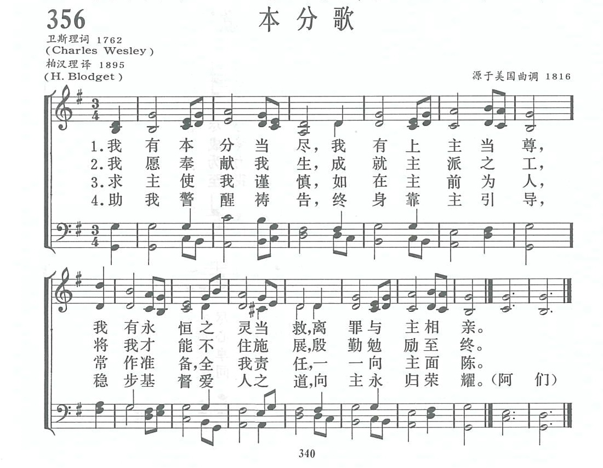

1602
A Charge to keep I have 本分歌
|
|
|
1 A charge to keep I have,
A God to glorify,
A never-dying soul to save,
And fit it for the sky.
2 To serve the present age,
My calling to fulfill;
Oh, may it all my pow'rs engage
To do my Master's will!
3 Arm me with watchful care
As in Thy sight to live,
And now Thy servant, Lord, prepare
A strict account to give!
4 Help me to watch and pray,
And still on Thee rely,
Oh, let me not my trust betray,
But press to realms on high.
Source:
|
我有本分當盡，我有上主當尊，
我有永恆之靈當救，離罪與主相親。
我願奉獻我生，成就主派之工，
將我才能不住施展，殷勤勉勵至終。
求主使我謹慎，如在主前為人，
常作準備，將我責任，一一向主面陳。
助我警醒禱告，終身靠主引導，
穩步基督愛人之道，向主永歸榮耀。阿們。 |
|

http://gepu.shenshi777.com/m/view.php?aid=15014
|
| |
|
（来源：《赞美诗新编史话》）
本分歌 A Charge to keep I have
经文：“提摩太啊，你要保守所托付你的” (提前6：2O)。
这首诗有人认为是英语圣诗中最常唱的一首圣诗，是卫理公会著名圣诗作家查理.卫斯理 (事略参阅第74首)所写的。

诗的词意简明，所说的责任非常明确。所以无论什么时候，不论哪一种聚会都可以唱。该诗最初载于 1762年所出版的《经文短歌》一书内。它所根据的经文是利未记第8章第35节：“七天你们要昼夜住在会幕门口，遵守耶和华的吩咐，免得你们死亡，因为所吩咐我的就是这样。”这首诗是信徒日常生活的座右铭。
求主使我谨慎，如在主前为人，
常作准备，全我责任，一一向主面陈。
译词的柏汉理 (又译柏亨利,H.Blodget ，1825— 1903)，是美国公理会 (见第25首注①)传教士，1854年来华。他曾与其他传教士用了近 10年工夫将新约译成中文。
曲谱调名为《衣阿华 (IOWA)》，有时也叫《肯塔基 (KENTUCKY)》。曲作者佚名。

Notes
A charge to keep I have. C. Wesley. [Personal
Responsibility.] First published in his Short Hymns on Select
Passages of Holy Scripture, 1762, vol. i.. No. 188, in 2 stanzas of
8 lines and based on Lev. viii. 35. It was omitted from the second
edition of the Short Hymns, &c, 1794, but included in the Wesleyan
Hymn Book 1780, and in the P. Works of J. & C. Wesley,
1868-72, vol. ix., pp. 60, 61. Its use has been most extensive both in
Great Britain and America, and usually it is given in an unaltered form,
as in the Wesleyan Hymn Book No. 318; and the Evangelical
Hymnal, New York, No. 320. The line, "From youth to hoary age," in
the American Protestant Episcopal Hymnal No. 474, is from the
American Prayer Book Collection, 1826.
https://www.umcdiscipleship.org/resources/history-of-hymns-a-charge-to-keep-i-have
History of Hymns: 'A Charge to Keep I Have'
"A Charge to Keep I Have"
Charles Wesley
The United Methodist Hymnal, No. 413
A charge to keep I have,
a God to glorify,
a never dying soul to save,
and fit it for the sky.
In their recent book, Presidential Praise: Our Presidents and Their Hymns
(Mercer University Press, 2008), authors C. Edward Spann and Michael E. Williams
Sr. note that the title of President George W. Bush’s autobiography, A Charge to
Keep, was drawn from Charles Wesley’s hymn.
The choice of this title is but one indication of the role this hymn has played
in the life of President Bush, as well as the influence of this hymn 250 years
beyond its composition.
As is the case with hymns by the Wesleys, “A charge to keep I have” is grounded
in Scripture. In this case, Leviticus 8:35 is the primary source: “Keep the
charge of the Lord, that ye die not” (KJV).
The hymn was included in Short Hymns on Select Passages of Holy Scripture
(1762), a massive two-volume collection of 2,030 hymns based on biblical texts
from Genesis to Revelation. UM Hymnal editor Carlton Young also points out
additional references: 2 Peter 1:10, Hosea 6:2, and Matthew 25:30 and 26:41.
Wesley scholars F. Hildebrandt and Oliver A. Beckerlegge propose in their
commentary on the important Wesley hymnbook A Collection of Hymns for Use of the
People Called Methodists (1780) that Charles Wesley (1708-1788) based his text
on Mathew Henry’s Commentary on Leviticus. Henry notes:
“We have every one of us a charge to keep, an eternal God to glorify, an
immortal soul to provide for, needful duty to be done, our generation to serve;
and it must be our daily care to keep this charge, for it is the charge of the
Lord our Master, who will shortly call us to an account about it, and it is our
peril if we neglect it. Keep it ‘that ye die not’; it is death, eternal death,
to betray the truth we are charged with.”
This hymn is an unequivocal call to commitment to follow the Master and to
fulfill our vocation through service. The language is unambiguous. Our calling
is to save a “never dying soul” and “fit it for the sky”—that is for eternal
life with Christ. This eschatological goal is central to Charles Wesley’s hymns:
Our goal is heaven.
In the second stanza, we find that we fulfill this calling by our service
to “the present age.” Fulfilling this calling requires us to engage “all [our]
powers.” The third stanza is a petition that God should “arm [us] with jealous
care” as we live in God’s sight. Wesley is not afraid to offer a stern
admonition that we will one day be required to give “a strict account” of our
activities in pursuit of our calling.
The final stanza is perhaps the most uncompromising. The singer begins
with the imperative verb—a petition to the unnamed Holy Spirit—to “Help me to
watch and pray . . . ” Rather than suggesting a positive reward for
faithfulness, Wesley warns us of the outcome “if [we] our trust betray”: we
“shall forever die.”
Hymnology scholar Fred D. Gealy notes that there have been several attempts to
alter the final lines in order to soften the ominous judgment that is implied.
The Historical Companion to the influential Hymns Ancient and Modern concludes
the hymn with these two lines:
And let me ne’er my trust betray,
But press to realms on high.
The British Methodist hymnal, Hymns and Psalms (1983) altered the final two
lines as follows:
So shall I not my trust betray,
nor love within me die.
Professor Gealy notes that the “alteration [of these lines] weakens the
intensity of the hymn. The Gospel always comes with [both] threat and promise.”
This hymn has traditionally been a favorite at annual conferences, or in
African-American congregations at the conclusion of Holy Communion.
The tune BOYLSTON was composed by the famous New England music educator Lowell
Mason (1792-1872) and was first found in his The Choir, or Union Collection of
Church Music (1832).
Dr. Hawn is professor of sacred music at Perkins School of Theology, SMU.
http://www.wumc.com/blog/a-charge-to-keep-i-have-week-4-hymn
Hymn for Week 4 - "A Charge to Keep I Have"
A Charge to Keep I Have – Charles Wesley
UM Hymnal #413 BOYLSTON
I was not familiar with this hymn until recently. As I have been listening to
Pastor Meredith’s sermons, I chuckle a little bit how the brothers Wesley seem
to fall into the categories of believers she has been highlighting. This past
Sunday she spoke about sanctifying and perfecting grace and how God through the
Holy Spirit is constantly at work in us (if we open ourselves to God) to heal,
restore and recreate us into what we were designed to be in the first place.
Reading through the hymn below I can see both, the guilty and the overachiever!
Do You see it?
A charge to keep I have,
a God to glorify,
A never-dying soul to save,
and fit it for the sky.
To serve the present age,
My calling to fulfill;
O may it all my powers engage
To do my Master’s will!
Arm me with jealous care,
As in thy sight to live,
And oh, thy servant, Lord, prepare
A strict account to give!
Help me to watch and pray,
And on thyself rely,
Assured, if I my trust betray,
I shall forever die.
Both, John and Charles Wesley took every opportunity to convince their audience
that God’s salvation is not one moment in time but an ongoing journey. I believe
that their writings have not lost their power and even though the language is
old, the contents is completely relatable today. In their recent book,
Presidential Praise: Our Presidents and Their Hymns (Mercer University Press,
2008), authors C. Edward Spann and Michael E. Williams Sr. note that the title
of President George W. Bush’s autobiography, A Charge to Keep, was drawn from
Charles Wesley’s hymn. The choice of this title is but one indication of the
role this hymn has played in the life of President Bush, as well as the
influence of this hymn 250 years beyond its composition. [1]
Originally, this hymn was published in 1762 as a two-stanza short meter[2] hymn
under the title “Keep the charge of the Lord, that ye die not”. Charles liked to
base his hymns on Scripture just like John based his sermons on scripture. In
this case, Charles used Leviticus 8:35
“You shall remain at the entrance of the tent of meeting day and night for seven
days, keep the Lord’s charge so that you do not die; for so I am commanded.”
However, F. Hildebrandt and O. A. Beckerlegge tell us in their commentary on the
1780 collection that more than likely did Charles base his text on Matthew
Henry’s Commentary on Leviticus. There are obvious similarities in both texts:
‘We have every one of us a charge to keep,
An eternal God to glorify, an immortal soul to provide for,
Needful duty to be done, our generation to serve;
And it must be our daily care to keep this charge,
for it is the charge of the Lord our Master,who will shortly call us to an
account about it, and it is our peril if we neglect it.
Keep it ‘that he die not’; it is death, eternal death,
to betray the truth we are charged with.’
The beauty of Charles Wesley’s hymns is the ongoing narrative throughout the
stanzas. I agonize over what stanzas to cut in a hymn because it feels likes
cutting out some of the story and that feels like shortchanging those who sing
the hymn. What if I leave out the stanza that helps them to hear God’s wooing?
Stanza one states unambiguously what our call (charge) is – salvation! We
are to love and submit to God and to prepare our souls for heaven.
Stanza two states on how we are to fulfill that call – through service!
Stanza three begins with a petition to God to help us to be faithful to
servanthood and ends with a warning that judgment will come.
The final stanza continues with a petition to the unnamed Holy Spirit to
help us to stay on the path because otherwise there will be no reward.
I can see you rolling your eyes because of the threatening tone of stanzas three
and four and you are right to do that because it is indeed threatening. We can
read this through the lens of guilt and shame and will not be able to see beyond
the wall that goes up inside of us. Or, we could read this through the lens of
compassion and empathy. It is indeed difficult to believe that God would love
and restore us even though we seem to fail constantly in this thing called
faith. Fear is a great motivator and it is very possible that Charles and John
used fear to help others (and maybe even themselves) to repent (turn around) and
fully open themselves to the work of the Holy Spirit inside of them. Fear works,
we see that every day. But if we could give the thought of unconditional love a
chance, we could realize that we are not alone in this; we are walking hand in
hand with God and nothing can ever separate us from the love of God. Therefore,
let us join the choir of angels who have spoken to humans and said: Fear not,
our help comes from the Lord who made heaven and earth! Glory to God!
Hallelujah! Amen!
A quick word to the tune BOYLSTON. New England native Lowell Mason wrote this
tune in 1832, seventy years after Charles wrote the hymn and on a different
continent. This is another good example how the matching of a tune with a hymn
may also be an interpretation of that hymn. The melody is modeled after the
ancient psalm tones[3] giving the text the feel of scriptural wisdom. We will
sing this melody, but I invite you to sing this hymn with the personal faith
narrative Charles Wesley gave it.
[1] www.umcdiscipleship.org/resources/history-of-hymns-a-charge-to-keep-i-have
[2] Short meter refers to the number of syllables in each line. In this case
6.6.8.6 with rhymes in lines 1 and 3 and 2 and 4.
[3] Psalm tones consists of a single pitch for monotony with the text, followed
by a half cadence; a second pitch for monotoning, followed by an ending cadence.
https://zh.wikipedia.org/wiki/%E6%9F%A5%E7%90%86%C2%B7%E5%8D%AB%E6%96%AF%E7%90%86
維基百科，自由的百科全書
跳至導覽跳至搜尋
查理·衛斯理（Charles Wesley，1707年12月18日－1788年3月29日）是18世紀英國循道運動的領袖之一，約翰·衛斯理的弟弟。查理·衛斯理主要以創作大量聖詩著稱。
查理・衛斯理（Charles
Wesley，1707年12月18日－1788年3月29日）是18世紀英國循道運動的領袖之一，父親撒母耳・衛斯理（Samuel
Wesley）是聖公會牧師和詩人。循道會的創辦人約翰·衛斯理（John Wesley）的弟弟。兒子是音樂家撒母耳・衛斯理（Samuel
Wesley）。是音樂家撒母耳・塞巴斯蒂安・撒母耳（Samuel Sebastian
Wesley）的祖父。儘管理查和他兄弟約翰關係十分親密，但他們不是常常同意對方的信念。特別是查理堅決反對違反有關英國聖公會為他們規定的想法。查理・衛斯理創作了七千多首聖詩，被稱為詩中之聖 [1]。他的詩被世界各地的教會所使用。他布里斯托的禮拜堂（The
New Room Chapel in Bristol）是他事奉生活的一部分。他的屋也在附近，也歡迎參觀 。[2]
幼年時期[編輯]
查理·衛斯理生於的厄普臥（Epworth），林肯郡(Lincolnshire)，英格蘭1791年卒於倫敦。他的父親撒母耳·衛斯理（Samuel
Wesley）是聖公會的牧師，畢業於牛津大學，母親蘇撒拿・安尼斯理（Susanna Annesley） [3]重視嚴謹的教育，是一位能幹，賢淑，透過她的優良家教，約翰·衛斯理在家裡在十九位弟兄中，他是第十八位。八歲的時候，他父親把他送到倫敦的威斯敏斯特學校（Westminster
School）。
一七二六年，查理·衛斯理因在威斯敏斯特學校成績卓越，被保送到牛津大學（Oxford University） [4] 的基督教會學院（Christ
Church
College）讀書。1727年，查理與他的同學在牛津大學成立祈禱會。一七二九年，他哥哥約翰・衛斯理加入成為領袖，並將自己的信念放進祈禱會。這個祈禱會專注於研究聖經和聖潔的生活。其他的學生嘲笑他們，說他們是「聖潔會」（Holy
Club），循道友（Methodists）。他們極其詳細地在聖經研究，意見和過有紀律的生活方式，同時他們也作許多慈善的工作，傳福音，特別去探訪監獄裡的囚犯，向他們分享上帝的愛。喬治·懷特腓（George
Whitefield）也加入這個組織。查理畢業於古典學和文學碩士。1735年，跟父親和哥哥進入教會服事。
航行到美洲[編輯]
在1735年10月14日，查理・衛斯理和他哥哥約翰・衛斯理乘坐鮮敏號（Simmonds）輪船前往美洲的喬治亞（Georgia）從事差傳工作。同船有的便雅憫・殷涵（Benjamin
Ingham）和查理士・廸拉莫（Charles Delamotte）。 查理・衛斯理被任命為局長印第安人事務（Secretary for
Indian
Affairs），約翰・衛斯理留在薩凡納（Savannah）。根據查理・衛斯理的日記條目，他到了1736年3月9日，在附近的一個弗雷德里卡堡，聖西門島（Fort
Frederica, St. Simon's Island）作駐軍和殖民地的牧師 [5]。然而，事情並沒有變成好，他不受當地的開荒者歡迎，因為他們都是放縱自己，宴樂度日的人。加上查理・衛斯理受到很大程度上的拒絕。在1736年8月16日，查理・衛斯理離開喬治亞洲，到南於羅來納洲（Charleston,South
Carolina），航行再也沒有回到喬治亞的殖民地了。 [6] 1736年12月3日，查理・衛斯理病倒，在風浪中乘船回到英國。
查理・衛斯理在1738年5月21日經歷了一個屬靈上的轉變。他在三天前胸膜炎復發，他的哥哥和其他弟兄姊妹在前一晚到查理的家為他的病熱切禱告。神便醫治了查理，讓他的身體慢慢康服。
查理・衛斯理感到有股重新的力量，讓他將福音傳給普通百姓。他又寫作了很多的詩歌讚美，打動和感化很多英國剛硬的心靈，而他的詩歌也越來越出名。
1739年，當時循理會受到聖公會的敵對，將約翰・衛斯理，喬治·懷特腓和查理等人列入黑名單，他們不可以進到英國聖公會的教堂作宣講。受到喬治·懷特腓公開演說的影響，衛斯理弟兄走到廣場和街道上宣講福音
。[7]他們試過在不同的地方受到暴徒的包圍和襲擊，破壞循理會的聚會點，但查理被聖靈充滿，勇敢宣講神的福音，帶領很多人信耶穌。
1745年，查理・衛斯理不能再巡迴布道，要在信徒的培訓工作上下苦工，因此他決定專心牧養教會。他停止在廣場公開講道和繁忙的旅程，在外頭奔馳，因為他需要注重身體的健康。查理定居在聖美利勒邦波恩教會（Marylebone
Parish Church）。在他臨終前，他找約翰．哈雷（John
Harley）來，跟他說「先生，無論世界的人會怎樣說我，我都活了，也死了，我是英國教會的成員。我求你把我埋在墓地。」他死後，他的屍體被運到聖公會墳場（Parish
Burying Ground）安葬，為他立紀念石放在美利勒邦高街（Marylebone High
Street）的公園。他的其中一個兒子撒母耳成為教會的管風琴手 。[8]
婚姻與兒女[編輯]
在1749年4月，查理娶了比他年輕18歲的莎拉・奎寧（Sarah Gwynne1726－1822），又稱作莎莉（Sally） 。[9] 他是富裕的奎寧爵士（Sir
Marmaduke Gwynne）的女兒。後來這位爵士被威爾斯（Howell Harris） [10] 說服成為循道友。1749年4月8日，查理・衛斯理為查理和莎莉主持婚禮。1749年9月，他們搬入有里斯托爾（Bristol）的小屋。莎莉陪伴著弟兄們在英國告地的傳福音旅程。1756年後，查理沒有太多的旅程到偏遠的地區，主要是在倫敦和布里斯托爾之間穿梭
。[11] 1771年5月，查理得到倫敦教會的姊妹支持，向他的一家提供了一座房子，莎莉和他的大兒子便搬進與查理一家團聚。1778年，全家已經從布里斯托爾轉到倫敦的房子，在切斯特菲爾德街1號，馬里波恩（1
Chesterfield Street,
Marylebone）。他們一家一直住在這大屋，直到查理死後仍住著。在布里斯托爾的房子仍然保留，並己重修，但倫敦的戶子在19世紀中已被拆毀了 。[12] 查理和莎莉一共生了九個孩子﹐其中六個在襁褓中去世。只有三個孩子是倖存的。查理．衛斯理（Charles
Wesley 1757年至1834年），莎拉・衛斯理（Sarah Wesley 1759年至1828年），她也像她的母親喜歡被稱莎莉（Sally）,
還有撒母耳・衛斯理（Samuel Wesley 1766–1837）。在1753年至1768年，他們的孩子約翰（John），瑪麗亞瑪莎（Martha
Maria）, 蘇珊娜（Susannah）,斯莉娜（Selina ）和約翰詹士（John James）都是埋葬在布里斯托爾。
撒母耳和查理是苗子天才，像他們的父親，成為管風琴和作曲家。查理大部分職業生涯都是作英國王室的私人管風琴。撒母耳成為了世界最有成就的音樂家，稱為「英國莫扎特」。除此之外，查理的兒子，撒母耳・塞巴斯蒂安・衛斯理（Samuel
Sebastian Wesley），是19世紀最重要的英國作曲家之一 。[13]
.jpg/220px-Charles_Wesley_(4368240967).jpg)
在查理斯的青少年及初成時期，他主要是把古典的拉丁文翻譯成有權能的對聯，直到1738年，他抒情詩調的專長是在他的轉化中啟發出來。 [14] 查理斯有龐大的文學著作，提到他以未出版的詩一共寫了約九千首詩歌，當中包含了27,000節及180,000句。 [15] 他的寫作很有生氣及無限制的。普遍人認為其哥哥［［約翰•衛斯理］］寫詩的措辭雖然比他的較優美，但他寫的詩詞所引申出來的觀點同樣有價值，特別在他的風格及詞彙裡更能感染及觸動其他原創者。 [16] 查理斯至少有24首的匿名的詩歌作品。而他的讚美詩小冊子也非常流行及出名的。 [17] 他與哥哥約翰•衛斯理聯名出版了500首詩詞，有Hymns
and Sacred Poems of 1739, 1740, and 1742, the Collection of Psalms and
Hymns of 1743, pp.206-88 of Vol.3 of the Collection of Moral and Sacred
Poems (1744), Hymns on the Lord’s Supper of 1745, and Hymns of Petition
and Thanksgiving of 1746。 [18]
查理斯的日記[編輯]
查理斯衛斯理於牛津大學時期開始寫作。如他的兄弟一樣，查理斯盼望透過寫作來調節他的生活及靈命成長。這一方面，查理斯受到他哥哥約翰的鼓勵，開始撰寫「日記」，這亦是他開始寫作的重要一步，大多反映他內心的想法及反省。查理斯早期的日記的內容較為全面，但後來卻變得簡潔和不規則，弗蘭克·貝克更認為他的日記「極不均衡」。而他的刊物亦反映出他的內省能力明顯地較他哥哥約翰弱很多。因此，縱然查理的刊物由1729年開始產生，卻在1849年才第一次被印行。 [19]
內容方面，從查里斯的日記中，可見他詳盡地記錄了他多次探監的情況，顯示出他似乎十分關懷那些在監禁中的犯人。而查里斯在世最後一本著作《為判刑的罪犯禱告》（Prayers
for Condemned
Malefactors）也是為犯人寫的。當他七十八歲時，即1785年4月28日，他所代禱的十九個罪犯，在逝世前全部認罪悔改。查理莊重地對待犯人的死亡問題，對自己也如此。不了解查里斯的人會以為他反覆不斷地述及死亡，是不健康的和病態的。他的日記中多次提到死的來臨和想像死亡的情景，但是他對死亡的聯想與一般人不同，是喜樂而又平安的，一點也不像那些患了憂鬱症的人。其實一般循道會的信徒均如此，在告別人間時都是平妻和喜樂的，特別感受到神的同在。查理斯為到循道會信徒有這種慷慨歸回天家的精神感到光榮。他更認為這對於他們所傳揚的福音真理是一個美好的見證。有一位英國的醫生對查里斯這樣說：「大多數人害怕死亡，但是我從未遇到像你們這樣的循道會的人。他們幾乎沒有一人畏懼死亡，他們臨終時顯得安寧和平靜，聽更由命至最後一秒鐘。」查理斯女兒憶述他父親在末了一段日除的情景：當身邊的人問查里斯有甚麼需要時，他總是這樣回答：甚麼也不需要，惟獨需要基督。他堅持有基督同在就不一樣（Not
with Christ）。 [20]
查理斯的信件[編輯]
查理斯的信件是第二項重要的資料來了解他及他的事奉，通常也是他離家時寫給他家人的。而托馬斯·傑克遜形容他的信件為「樸實的書信」，很可能是他在用字上較他哥哥約翰的作品少了許多波蘭語。這些信件表現了查理斯在家庭中的一面，成為了解他私生活的重要來源，而他的信件與日記合併起來更能全面了解其工作。 [21]
可能是詩歌方面的成就太卓越，縱然查理斯投放了很大心血在宣講的服侍上，可是後世卻忘記了他作為傳道牧者的身份。跟他的兄長約翰同樣，由於他們都承傳敬虔主義的傳統，故此他並不是十分情願地進行露天的布道模式。自1739年6月24日，他打破當時的框框，開始把街頭、花園、任何的戶外場地變成宣講的會場，放棄了必然在教堂內教導的想法。儘管查理斯個性較為沉默，現場說教時卻能面對群眾放聲宣講，而他美妙的聲線及詩人般的演講方式亦令他的布道十分有效。他在一封信上感謝上帝以此方法來祝福他的服侍，他說「神使我抬起我的聲音時像小號，使所有會眾都能清楚聽到我所說的；而我會在結論時以歌唱邀請罪人。」在1751年8月9日，查理斯的信件顯示了他在教導工作上的限制，他感到教導並不是他主要的事奉，神知道他一切的困難，知道他的負擔，並會親自與他一同面對。這信件代表了查理斯事奉焦點的過渡，已由教導轉為創作詩歌。 [22]
在查理•衛斯理的一生中，他堅持在五十年內每日寫10句詩歌歌詞，而隔天他便能完成一首詩歌。 [23] 在1764年，他完成了一共5冊與福音書及使徒行傳有關的手寫詩歌，裡面約3,500首聖詩。他的詩歌及文本校對是多數放在Representative
Verse of Charles Wesley的著作中。 [24] 他臨終前五年，雖然他只寫了300首詩詞的文學作品，卻有部份著作能夠真正出版。 [25]
查理斯有另一種的方法去表達及開發人內心的意念，就是他創作的詩歌。他也被譽為循道會中最甜美的歌手，他的詩歌相較他其他方面的貢獻亦是最持久。
在教會歷史上，查理斯被稱為「詩中之聖」，與以撒華滋（Isaac Watts）、芬妮.克羅斯比（Fanny
Crosby）同被視為偉大的詩人，三人的詩歌都推動了同時代的復興運動，也為那時代的教會帶來祝福。查理斯創作之詩歌對後世有重大的影響，其驚人之處不單在於詩歌的質素，更在於出品的數量。雖然查理斯寫下了許多的詩歌，但有超過四百首是屬於不同的基督教團體，有關這些詩歌的著作權仍不太清晰，其中包含了一些重要的問題。 [26]
首先，就是有關詩歌作者的爭議。有部份詩歌不知道原創人是查里斯還是約翰。縱然兩兄分都有協議不在分開創作的詩歌上指明作者，但一些學者會為到聯合創作的議題些爭論不休。其次是，解決什麼是「詩歌」，「詩歌」可被稱為「已出版的詩歌」嗎？或是被人唱頌過的都是「詩歌」？或是未被唱頌過的「聖經中選取的短詩」（Short
Hymns on Select Passages of
Scripture）（1762）也計算在內？兩兄弟在「讚美詩」及「聖詩」之間沒有提出正式的區分，兩者之間的分別亦不在於寫作的方式，而在於應用上。 [27]
查理斯持續又規律地寫詩，詩歌總數估計有7300首，比以撒華滋和芬妮.克羅斯比的詩歌都較多被採用。在1762年至1766年，他寫超過6,248首聖詩，平均一年寫約1,250首。多數的著作都是在50歲內誕生，豐盛時期是在他30多歲。雖然如此，縱使50歲後不是太多生產，但他在1763年至1766年亦不斷完成及修訂他的聖詩集。在1774-1787年更發行了第七次的修訂版聖詩集。 [28] 從他的日記中，也可發現他寫詩歌的習慣，他視寫詩為每日必須的工作，也是生活的一部份。（READER）他的人生經驗豐富，屬靈經歷深厚，接觸的範圍比許多人廣泛；所以他的詩歌題材也是多方面的，包括救贖和重生的詩歌、靈命追求的詩歌、有關教會生活的詩歌等。其中《耶穌，靈魂的愛人》流行之廣，影響之大，超過了他所有的作品。 [29] 在他將近離開世上的前幾天，他向他的太太以口述的傳遞方式來寫作最後的一首詩，詩中的內容提到縱然面對軟弱無能的身軀，但對他唯一的盼望就是上帝。 [30]
十八世紀文學[編輯]
一如當時的習慣，查理斯沒有提供影響其思想或詩歌的來源. Alexander Pope 是其中一位最影響查理斯作品的現代人.
查理斯有彈性的風格有機會受Matthew Prior 的影響，而Alexander Pope較為沉穩的風格則對查理斯有較少影響.
查理斯在信中表達對自己影響較深的詩人，如Cowley, Spenser, Milton, Prior, Young. [31] Edward
Young 在two parts的作品中力證永恆及不朽的重要性、死亡的無可避免。查理斯喜愛讀Edward Young的詩集是一個疑問.
由Young的作品中, 查理斯認識到如何善用聖經、經典、俗語及重要的經歷去建構18世紀的用語.
古典 (the classics)[編輯]
查理斯被視為古典的喜好者, 此領域的恩賜更超越約翰, 故此他參與更正及調整約翰有名的作品Notes on the New Testament.
拉丁文及古典用語較多出現於查理斯的詩歌, 然而John Milton (1604-1674)及其他在宗教詩歌的先峰者而言,
查理斯作品中古典建構的成分則較低. 某程度上，他是新古典主義者, 力圖以較通俗的方式表達古典作品，成為18世紀文學轉接期的領航人物。
表達出追憶古典作品的情懷在查理斯的詩歌及寫作中比比皆是，由Vergil’s Aeneid、Horace, Homer, Plato
等的作品皆自然融合在作品裡.
基督教傳統[編輯]
James Johnson 曾形容希臘及羅馬文化、猶太及基督教文化的溶合連接著19世紀的新古典主義. 某些人物如Shaftesbury,
Bolingbroke, Gibbon 不接納基督教信仰，認為心靈是由基督教信仰及古典知識所交織而成.
新古典主義的文化氣氛則貶抑此等作家為教父傳統及非正統, 不論他們是否有信仰. 查理斯的作品較少直接引用早期教父的著作. 作品充滿英國聖公會的文化,
尤其是使用其信仰信條、公禱書. 查理斯兩次在寫作中為「因信稱義」的信條而辯護. 在講道中查理斯較少引用英國聖公會的教義. The Homilies
則被包含在其靈修生活、學習及在循道宗的事工裡.
公禱書是查理斯在聖公會中所善用的傳統來源. 他善用公禱書於個人靈修及公開敬拜之中. 曾經有一段時間, 由1739至1740 中,
查理斯操練靜默禱告。查理斯在晚期也會不定期地使用公禱書. 他認為可按情況決定是否視用公禱書.
查理斯的Short Hymns on select passages of scripture (1762年出版)
顯示公禱書仍然是其個人反思及詩辭的來源. 他的生命及詩集表達出古典和基督教傳統美妙的融合.
他對教父、聖公會風格的欣賞及應用被收錄於衛斯理的作品集裡, 形成其信心及詩歌.
聖經的應用[編輯]

J.E. Rattenbury 曾提出衛斯理的詩歌包含了聖經的應用. 查理斯在詩詞、講壇及日常生活中的用語皆受聖經的字詞所影響.
詩歌裡名副其實地鑲嵌了很多來自聖經的典故, 作品合乎聖經不單在於準確地表達出聖經的教條和原則, 更是原汁原味地展示聖經.
查理斯最喜歡形容聖經為「神諭」, 一個強調聖經預表性的描述. 以聖經作為宗教及神學表達是查理斯的習慣, 所以查理斯稱呼聖經為「信心的法則」(rule
of faith).
正是基於強調聖經的啟示性功能，神學性地表達神的話語與聖靈，查理斯的詩歌帶有濃厚的、活潑的、充滿生氣的聖經話語方向。對查理斯而言，聖經是恩典、是藉著聖靈與基督聯合的管道.
馬太福音9:20-21「來到耶穌背後」充份表達出其對聖經的深切欣賞. Unclean of life and heart unclean, How
shall I in His sight appear! Conscious of my inveterate sin I blush and
tremble to draw near; Yet through the garment of His Word I humbly seek to
touch my Lord.
查理斯一如奧古斯丁及路德等的神學家，皆採用以基督為中心的解經方式，以致從文學層面分析，其詩歌與同時期的奧古丁詩人大為不同。奧古斯丁風格由默想大自然以沉思神的偉大，而查理斯的作品中突顯十架上的聖潔、基督救贖世人，而非大自然;
他只聚焦於大自然的詩歌傳統，使其以基督及重要的神學主題 (如救贖、贖罪、捨己)為建構基礎。查理斯不只意譯經文於詩歌裡，更是在創作中加入自己的見解,
藝術性地處理經文, 按著聖經的主旨、以其神學理解去塑造歌詞.
神學理念[編輯]

在查理斯留下的大量寫作、書信及少量講章以外，詩歌最適合於研讀其神學思想，故其詩歌被形容為循道宗神學的最佳入門. 古典基督教神學由四方面定義救贖 一.
由職場及商業交易, 二. 法律的語言, 三. 潔淨的概念, 四. 軍事. 如何能更佳地表達聖經中的救贖呢? 詩歌可能是其中最好的神學表達,
基於其捕捉原來構造意念的過程, 正如查理斯的作品一樣, 以經文的字詞、短語及圖像去建構在人心中歌唱的神學表達。
查理斯的神學貢獻是其把詩歌與神學想像絶妙地配合. 查理斯經常使用犧牲的字詞去表達救贖, 例如「血」一詞在其晚期詩歌中出現達800次,
此來自「基督的血」, 「血」表達基督的死及其救贖 ,更展示出聖經的過去與現在的經驗結合: 「為我」而死的基督透過信心與renovation,
成了「在我裡面的基督」(Christ in me). 查理斯神學的中心可在其寫於1741年的日記, 指出永恆福音的真理是普世救贖及基督徒的成聖.
普世救贖[編輯]
「全部」得救贖在其晚期的詩歌中被提及超過三百次, 同時也提及基督的死所帶來普世性的果效. 基督捨生的死成就無盡的贖罪.
普世救贖的重要論點是阿民念主義中有關揀選及預定的教義. 他相信透過基督的死, 所有人都被揀選去得拯救,
故此那些不能來到神面前的人須要在自身中找回神恩典的暗記. 強調原罪的教義: 他形容原罪為「罪性」、「在懷裡的罪」等,
認為「原罪」、個人的罪及實際的罪沒有分別. 他認為前者會引申至後者的發生, 故此他認為「我為雙重的罪而傷心」. 他頗重視「基督的血洗淨我的罪」,
他的關注點在於內在、罪性的更新. 他對救贖的關注強調脫離過往罪惡的自由及現在克勝罪惡的能力, 是原罪與實際上所犯的罪之解放.
「拯救」在查理斯的角度是「完全的」、「完成的」或「到達極致」的拯救, 當中表達勝過「罪惡權勢」的自由.
救贖過程的果效是「取消」舊有的罪惡或「打破罪惡的枷鎖」. 以上都表 達出其對神恩典的樂觀態度- 一種以「完全的愛」為終極目標的恩典.
基督徒的完全[編輯]
成聖是查理斯福音的中心, 是透過基督的信心, 獲得公義的神學及邏輯 結果. 成聖是信心生命的果子. 成聖的字詞在其作品中出現壓倒性次數.
在晚期作品中, 聖潔及完全的字眼出現超過600次 (不包括暗示意思的句子) 基督徒成聖是根據約翰一書及希伯來書的真理, 強調信徒被神的愛充滿,
隨後是人意圦的更新, 以致「人非聖潔不能見神」.與其兄弟不同, 查理斯對完全的概念維持在不合格的異象,
忠心生命的完結就是人的內在回歸至天堂裡神的形象, 即是基督的形像或意念形成在基督徒裡. 正面來說, 其觀念能以潔淨及更新來表達,
然而完成的目標乃完全, 完全即聖潔、完全的愛或在內裡找到基督的豐富. 這種理解容易被誤解為: 信徒可以像天使般完美.
基督論[編輯]
查理斯持續地表達堅實的基督論, 透過使用舊約及新約的互相對照, 擴張及解釋基督的屬性. 最為人認識的是其建構基督在「我裡面」的體會.
查理斯使用傳統的系統以表達基督的位格及工作, 例如使用先知、祭司、君王代表其三位一體. 在其創意的詩歌創作裡, 共有超過五十個對基督的稱呼,
其重點在於基督的救贖, 並習慣使用以賽亞書52: 12-53:13中受苦之歌去形容基督的救贖工作. 他相信基督的工作在復活中完成,
然而復活的目標不是基督坐在上帝的右邊作天上的權管, 道成肉身的延續是基督成形在信徒生命裡. 基督復活的頂點, 包括其在天上的掌權, 是在完全的愛中.
同歸於一論[編輯]
查理斯的同歸於一論神學與早期教父有頗為相似的地方. 透過愛任鈕及其跟隨者, 救贖的主題在早期東方教會中變得更普遍. 在早期的作品裡,
查理斯主張基督徒的完全 (回歸至神的形象) 乃信徒唯一的需要, 而他以此作主題的講道介紹成聖為基督徒信心的重要部份,
並以同歸於一論形容基督徒的完全: 「發現人的墮落尤為重要, 以神的形象取代撒旦的形象是阻礙自由及健康的!
最重要的事乃在靈魂裡除掉惡者、再次得到重生、並以創造主的形象得以更新」 有關此效法基督主題的應用在其救贖神學及同歸於一論組成重要連繫.
效法基督是其同歸於一論的重要概念, 並且建立門徒訓練的路向. 基督僕人倒空自己的生活方式是指效法及模彷基督, 十架神學並沒有停於救贖,
而是向著十架的路、受苦神學去推進. 基督的十架要求人們背起自己的十架去跟隨祂, 而救贖, 在除掉罪的層面上, 雖然是完全或完成了,
仍然需要以信心的回應及忠心的屬靈果子作為完全, 十架進入信徒的生命後, 要求門徒付上沉重的代價. 查理斯以「救贖」一詞去描述基督完成及完成的工作.
透過其詩歌、戲劇、日記的形式表達出基督在人們作出回應之時巳被掛十架上. 他催促信徒要去符合神的期望. 其主張的「十架學校」(school of
the cross)並非以模彷基督的謙卑為主, 而是聚焦於基督的受苦及背上十架方面, 再次勉勵信徒去跟隨基督受苦的生命, 達致更像基督品格為目標.
While I thus my Pattern view, I shall bleed and suffer too, With the man
of sorrow join』d One became in heart and mind.
More and more like Jesus grow, Till the Finisher I know, Gain the final
Victor’s wreath, Perfect love in perfect death.
查理斯強調背起十架是沉重的代價, 也是信徒生命的一部份. 在受苦中, 意志及動機被煉淨, 使之邁向基督徒的完全. 此說法好像每天放下自己的過程,
換句話說, 十架是迎接冠冕的預備. 以上看法在其馬可福音8:34 詩歌中融合: The man that will Thy Follower be,
Thou bidd’st him still himself deny, Take up his daily cross with Thee,
Thy shameful death rejoice to die, And choose a momentary pain, A crown of
endless life to gain.
很多學者認為查理斯的受苦神學較為極端; 把受苦及淨煉連結更是罕有的概念. 然而, 透過其獨有對基督徒成聖的關注、其頑疾的影響及愁緒、聖經中的信息,
查理斯發展救贖的概念至生活層面, 此乃大部份新教領袖不敢嘗試的. 若果受苦僕人的形象成為其對信徒主要的描述, 則沒有失去僕人身份的認同.
基督的跟隨者, 背起十架, 是被召去「滿足神的受苦」. 查理斯應用了保羅的用語, 表達出基督在被社會排斥的人、受壓迫的人、鄰捨身上被反映出來,
而減輕這群人的痛苦則是十架的復和作用. 查理斯有關於「好撒瑪利亞人」的詩歌及講道正表達了十架與基督徒服務的有力連結.


著名作品[編輯]
查理·衛斯理一生出版了5500首聖詩，其中有許多廣受歡迎：
其中有150首收錄在衛理公會聖詩集Hymns and Psalms中。
http://wellsofgrace.com/biography/biography/charles_wesley.htm
查理·卫斯理小传
Charles Wesley
(1707-1788)
| 第一章 当时的时代背景 |
第二章 卫斯理的家族渊源 |
第三章 童年的学习生活 |
第四章 成立了圣洁会 |
| 第五章 在乔治亚的日子 |
第六章 灵性上的转变 |
第七章 成为巡回布道家 |
第八章 传讲的中心信息 |
| 第九章 逐渐背离圣公会 |
第十章 有见证的模范家庭 |
第十一章 牧养教会的日子 |
第十二章 历史上伟大的诗人 |
| 第十三章 毫不畏惧死亡 |
参考书目 |
|
|
第一章 当时的时代背景
 在叙述查理·卫斯理生平之前，有必要交代一下他出生时的时代背景。
在叙述查理·卫斯理生平之前，有必要交代一下他出生时的时代背景。
英国经过了长时期的宗教纠纷之后，到了十八世纪，英国的国教圣公会终于站稳了脚跟；国教、政府、王室已经联成一体，成为不可分割的了。为了巩固英国国教的一尊地位，英国王室的法令和国会的法案不断涌现，令人眼花缭乱，无非是要遏止天主教(Catholics)和异见者(Dissenters)的活动。
这些政治的权力和世俗的影响力，对信徒的灵性生活毫无帮助，仪式和虚文是不能供应生命的。实际上，教会的情况是极其荒凉冷淡，许多神职人员表现得非常松弛懒惰，大多数人精神涣散，酗酒、不守本位。一些神职人员的薪俸菲薄，要节衣缩食才能勉强维持生活。有些自甘堕落的神职人员流连酒吧，不专心在讲台讲道，更谈不上去探望信徒。
出现这种情况，归因于当时英国国教制度的不合理。在神职人员中，出现了待遇差别、贫富悬殊的现象。那些居于高位者，养尊处优，把教区的工作交给那些年轻的、挨饿的年轻牧师去打理，这些年轻神职人员必须看上层主教们的脸色，因为下层神职人员的收入，仰赖上层圣品阶级的施舍。
英国圣公会的伯克利主教(Bishop Berkeley)坦承，那里基督教在英国完全崩溃，严重的程度是任何基督教国家所未曾听闻过的。
英国著名的法理学家威廉·伯勒斯顿爵士(Sir William
Blackstone)轮流到伦敦的每一间教堂去听道，竟然听不出讲道者是一个基督徒，他们讲道的内容完全不涉及基督的救赎大恩。
由于社会低下层对现实不满，社会风气腐败，全国普遍出现酗酒的现象。在伦敦，每六栋民房平均就有一间酒吧。在英国，酒精的每年消耗量，从一七二七年的三百五十万加仑，剧增至一七五一年的一千一百万加仑。
最有历史意义和政治意义的是，法国大革命和美国革命运动都发生在卫斯理兄弟的时期。英国的工业大革命虽然在他们未出生时已发生，但全速发展却在卫斯理兄弟出生的时候，在这么特殊的时代背景下，神兴起了卫斯理兄弟俩人。
第二章 卫斯理的家族渊源
查理·卫斯理的祖先巴多罗缪·卫斯理(Bartholomew
Wesley)曾任圣公会牧师，原是一个骑士的儿子，他的妻子与他门当户对，也是一个骑士的女儿。在清教徒得势的年代，英国的查理士王子(Prince
Charles)--后来登基为查理士二世--在逃亡到法国之前，曾有一晚秘密投宿在巴多罗缪家里。那时有一个铁匠向那一教区的主任牧师告密，适逢主任牧师在祷告，而且不停息地祷告，直至查理士王子脱险，逃逸到法国。
查理·卫斯理的祖父约翰·卫斯理(John
Wesley)--与查理的哥哥约翰·卫斯理同名不同人--在牛津大学攻读东方文学。他曾因讲道惹上官司，坐监好几次，以致饮恨而死。
老约翰·卫斯理(Matthew Wesley)是伦敦一位很富有的外科医生；另一儿子撒母耳·卫斯理(Samuel
Wesley)，亦即本书主角查理·卫斯理的父亲。
撒母耳·卫斯理从先祖遗传了两样爱尔兰人的特性：抒写押韵的诗和喜欢与人争辩。查理·卫斯理就有父亲的写诗的遗传因子。
一六二二年，英国执行统一法案(Act of Uniformity)，强迫每个牧师要向会众公开表示，他同意英国国教公祷文(Common
Prayer)中所写的一切；法案规定每个牧师必须由英国的国教按立，结果约有二千牧师拒绝服从统一法案而被革职，内中就有老约翰--查理·卫斯理的祖父。
老约翰被革除牧职之后四个月，撒母耳·卫斯理生了下来；撒母耳一直在异见者(Dissenters)--或称独立教派的资助学校受教育。撒母耳十八岁时，父亲老约翰逝世。
当独立教派委派撒母耳·卫斯理撰文攻击圣公会--英国国教--时，由于他深入研究圣公会的教义，加上他在独立教派的一些不愉快经验，撒母耳竟认同圣公会。在一个早晨，他向母亲不告而别，前往牛津大学，在大学半工半读，直至修毕学业，才在圣公会担任牧师。
一六九七年，撒母耳·卫斯理被圣公会委派到林肯郡(Lincolnshire)的厄普卧(Epworth)地区任牧师。
厄普卧这个偏僻地区的区民，对于圣公会委派的牧师毫不友善，他们最反感的是撒母耳·卫斯理倾向保守党的。特别是撒母耳·卫斯理的性格直率，说话不给人留情面，引起了当地居民对他的普遍敌视。
当地的居民向来仇视保守党，撒母耳·卫斯理的亲保守党的谈吐言论，惹来了一连串的灾祸：他的牲畜被残害；他的五谷被焚毁；后来他的房子被人纵火焚烧。据说所有的破坏都是出自同一批人。
撒母耳·卫斯理除了为人不够圆滑外，脾气又很暴躁，但是上述这些缺点，掩盖不了他的优点和长处。作为一个牧师，他忠心职守，不时探望信徒，规劝灰心者，告诫犯错者。他就是这样不屈不挠地、毫不松懈地服事和牧养那一地方的群羊。
撒母耳·卫斯理喜欢写诗。他的诗略嫌太长，他又不像他的儿子们--成为绝代的伟大诗人--肯花时间重写，肯对每一个字进行修饰和斟酌，但他写诗的效力却是令人敬佩的，直至他老年时，身体瘫痪了，一双手麻痹了，他仍以谱写诗歌为乐。
撒母耳一生中最大的建树，就是娶了苏撒拿·安尼斯理(Susanna Annesley)为妻。苏撒拿是这么能干、贤淑，透过她的优良家教，才教导出查理·卫斯理这样一个伟大的诗人来。
说真的，约翰·卫斯理和查理·卫斯理能成为历史上的伟大人物，应归功于他们兄弟有一位伟大的母亲。
第三章 童年的学习生活
查理·卫斯理是撒母耳·卫斯理和苏撒拿的第十八个孩子。
根据怀赫德医生（Dr.Whitehead）透露，查理·卫斯理是早产生下来的。查理·卫斯理一生下来，就被人用羊毛衣服包裹起来保暖，他既不会睁开眼睛，也不会哭，他的生命就是这样战战兢兢地被延续和保存下来。由于他先天不足、底子很薄，一生孱弱多病。
查理·卫斯理是一七0七年十二月十八日出生的，当时苏撒拿已经三十九岁。由于她养育了太多儿女，家庭经济拮据，生活担子把苏撒拿压得喘不过气来。
一七0九年二月九日，撒母耳·卫斯理的住宅突然起火，起火的原因很可疑，约翰·卫斯理后来述及这场火灾时，强调很明显地有人在纵火。那场火蔓延得很快，有一个护士奋不顾身地抱出只有一岁大的查理·卫斯理。六岁大的约翰·卫斯理，则被人从窗口救出来。
查理·卫斯理和他的姐妹们从小就在家里受到母亲苏撒拿严格的教导。
苏撒拿对每一个孩子都很严厉，查理也不例外，查理若犯了过错，苏撒拿不惜用鞭打来惩罚他。苏撒拿特别在顺服的事上，要求得特别严格，她训练孩子们从小就要懂得顺服长辈。
她又训练他们从小管理自己的生活，不贪食懒作，学习作一个自立的人。她除了定时给孩子们三餐外，不许他们在其间吃零食。
苏撒拿又要求孩子们在任何事上要诚实。在查理还不会说话的时候，苏撒拿就教他用手势来表示对神的感谢；在查理懂得说话的时候，她又教他用主祷文来祷告。查理·卫斯理遵照母亲的嘱咐，每天背诵主祷文两次，起床时一次，临睡前一次。
在这样一个孩子众多的家庭里，查理小时在物质方面是被忽略的，他从来没有穿过一件比较像样的、整齐的衣服。
查理·卫斯理从五岁起，开始由他母亲教他识字。开始学习的第一天，母亲苏撒拿从早上到晚上，寸步不离地陪伴着他，很细心地教他认英文字母。在第一天，查理就展露了他非凡的才华和超人的聪明，一天之内就用字母拼出了许多英文字。到了第二天，查理竟能用英文字母，拼读圣经第一卷《创世记》第一章第一节"起初神创造天地"。在读熟了第一节之后，他又拼读第二节"地是空虚混沌，渊面黑暗，神的灵运行在水面上。"查理的记忆力和智慧是这么突出，连他母亲苏撒拿也惊讶不已。
到了查理八岁的时候，他父亲把他送到伦敦的威斯敏斯特学校(Westminster
School)就读，该校校长是查理的大哥撒母耳(Samuel，与父亲同名)，这样撒母耳可以对查理善加照顾。查理已往从未和大哥一起住过，两人在伦敦相处了一段日子之后，建立了浓厚的手足之情。撒母耳是圣公会的牧师，他的严谨的、有纪律的生活成为查理良好的榜样。查理·卫斯理又受到他大哥撒母耳的影响，对诗歌特别喜爱，后来他真的往这方面发展，成为绝代的诗人。这时候，查理·卫斯理的另一个哥哥约翰·卫斯理(John
Wesley)，则在伦敦的查特学校(Charterhouse School)求学。
查理·卫斯理在威斯敏斯特学校读了五年书之后，在考试中成绩优异，荣获"御前学者"(King
Scholar)的名衔，从而他的学费获得基金会的资助。查理除了在学习上有了飞跃的进步，在同学中也备受敬重，在这个拥有四百名学生的学校，他被推选为学生的总队长
(Captain)，成为校长和学生们沟通的居间人士。这项荣誉的职位，给他从小就锻炼领袖才能的机会。
一七二六年，查理·卫斯理因在威斯敏斯特学校成绩卓越，得到每年一百英镑的奖学金，并被保送到牛津大学(Oxford
University)的基督教会学院(Christ Church
College)读书。查理的曾祖父、祖父、父亲和两个兄弟都是该学院的校友，整个家庭和基督教会学院实有悠久的历史渊源。
查理在威斯敏斯特学校时受到了大哥严格的约束，如今在牛津大学突然有一百英镑的年收入，生活开始放松。当年一百英镑是一个庞大的数目，这笔钱一直维持到他结婚的日子。那时候他另一哥哥约翰·卫斯理正在毗邻的林肯学院(Lincoln
College)当院士(Fellow)，约翰就想在灵性上多帮助弟弟查理。但是查理却认为约翰是在干预他的自由，大声嚷道："莫非你要我立刻摇身一变，成为一个圣人？"
一七二八年，约翰·卫斯理在父亲负责的厄普卧(Epworth)教区协助父亲料理教会事务，中间也回到牛津大学探望弟弟查理。奇怪得很，查理对于生命的切身问题的态度开始严肃起来，愿意虚心聆听约翰的开导。查理把自己的转变归因于某些人的代祷，他甚至推断代祷者是他的母亲苏撒拿。
约翰·卫斯理出乎爱心的话语深深地在查理的心里运行工作；查理于是向哥哥约翰坦白，在这些放浪形骸的年间，他迷恋一位女伶，如今他停止向女伶献殷勤，结束了这段不成熟的爱情。
查理在神面前经过了一段时间的寻求，主在他心中作工，他的生活行为有了明显的改变，他开始说服两三个同学，每主日去领圣餐，他们并遵守学校所规定的校规和学习方法。
查理跃然在生活上有见证，但大学里的同学多年来早已不再墨守成规，于是把查理视为嘲笑的对象，称呼循规蹈矩的查理和他的朋友为循道友(Methodist)。一个循道友，就是一个以圣经的话语来规范自己的人。
第四章 成立了圣洁会
一七二八年底约翰·卫斯理回到故乡尼普卧，在鲁特(Wroot)教区担任副牧师；查理仍留在牛津读书，一种属灵的责任感和使命感就从查理心中油然而生。
查理·卫斯理在牛津大学，找到了一些有心追求的人，成立了圣洁会(The Holy Club)。根据怀特腓(George
Whitefield)的说法，创会者包括查理·卫斯理、罗伯特·柯克汉(RobertKirkham)和威廉·摩根(William Morgan)。
查理等人成立了圣洁会之后，仍然希望约翰从鲁特教区回来带领圣洁会；查理不时向约翰倾诉他的属灵情况。一七二九年一月，查理写给约翰的信这么说：
"当你不在这里帮助我和辅导我时，我更应该凡事小心翼翼。实在是神在扶持我，我深信我会坚守在这岗位，直至我们相会的那一天。你是神用来帮助我的最合适的器皿。我深信神既然在我里面动工，他将继续地保守我，直至做成他的工作。"
圣洁会的成员除了每周守圣餐外，又互相帮助，殷勤读书。
一七二九年十月二十一日，林肯学院院长摩利博士(Dr. Morley)发信通知约翰·卫斯理，说他为林肯学院的实习院士(JuNior
Fellow)和班长(Class Moderator)，必须常驻学院。约翰·卫斯理不敢怠慢，于一七二九年十一月二十二日从鲁特教区赶回牛津大学报到。
约翰回到牛津大学，与查理重逢，快乐之情不在话下。查理在主面前，宁愿隐藏自己的能干和才华，谦卑自己；查理自愿地服在约翰的权柄之下，让约翰担任圣洁会的领袖。
在约翰·卫斯理的带领下，圣洁会的工作如火如荼地展开了。圣洁会的成员每天上午六时至九时集合在一起祷告，又勤读圣经，每个人都对自己严加审查和反省。此外，每星期有两天的禁食祷告。
当其他人嘲笑和戏弄圣洁会的成员时，圣洁会的成员表现得非常平静，脸上总是露出喜乐和平安。他们又到监狱里采访犯人，他们那种忘我的献身精神和俯就卑微的服事态度，在那时代是罕见的。
在那里，怀特腓(George
Whitefield)正在牛津大学半工半读，听到圣洁会的成员所作的美好见证，很渴望认识这些圣洁会的弟兄们。怀特腓没有料到，查理·卫斯理竟然主动地邀请他共进早餐。怀特腓述及这件事："我很感恩地抓住这个机会。这件事实在是神的祝福；在我一生之中，这是最有益的一次会晤。"
查理·卫斯理接着把怀特排介绍给他哥哥约翰·卫斯理和其他圣洁会的成员。
怀特腓效法其他圣洁会的成员，到监狱里去为犯人祷告；至于卫斯理兄弟两人，则抓住每个机会，向监狱的犯人传福音。
怀特腓后来成为神大用的器皿，是循道宗三大属灵领袖之一（其他二人为约翰·卫斯理和查理·卫斯理）。有关怀特腓生平，可阅读《怀特腓小传》。
第五章 在乔治亚的日子
约翰·卫斯理向犯人传福音的时候，立刻就考虑到前往美洲做差传工作。约翰·卫斯理同时也想说服查理·卫斯理，和他一起到美洲的乔治亚(Georgia)去从事差传工作。查理记载这件事如下：
"我已经拿到了大学的学位，只想在牛津大学度过一生。但是我的哥哥说服我陪他和一位奥格托普上校(Colonel James
Oglethorpe)到乔治亚殖民地去。"
一七三五年十月十四日查理·卫斯理和哥哥约翰·卫斯理搭乘鲜敏号(Simmonds)轮船前往美洲。同船的还有牛津大学圣洁会的成员便雅悯，殷涵(Benjamin
Ingham)和卫斯理兄弟的支持者查理士·迪拉莫(Charl Delamotte)。
鲜敏号在航行中遇到了狂风大浪，但在危难中，来自德国的二十六位摩拉维亚弟兄们(Moravians)，毫不惊慌，他们把一切的事交托神，对神有坚定的信心，他们流露出基督的生命，他们是那么喜乐和平安。
一七三六年二月六日，查理·卫斯理踏上美洲的土地撒万拿(Savannah)，翌日奥格托普上校将史宝真堡(AugustSpangenberg)介绍给查理·卫斯理。史宝真堡是美洲摩拉维亚定居地的领袖，在整个摩拉维亚弟兄会当中，其地位仅次于亲岑多夫伯爵(Count
Zinzendorf)。查理·卫斯理停留在撒万拿五星期，其间和摩拉维亚弟兄们有美好的交通，彼此分享每人从神所领受的。接着查理·卫斯理告别哥哥约翰·卫斯理，前往菲特力加(Frederica)，在那里担任奥格托普的私人秘书兼当地的印第安人事务秘书(Secretary
for Indian Affairs)。
查理·卫斯理虽然出任公职，但在他的心底里，他自认是一个服事主的人，他认定当初到乔治亚的目的，是做差传工作，并不是来作殖民官。
移民到乔治亚的拓荒者大部分都是从英国逃避债务来的。当时在英国每年有四千人因欠债被扣押。那些年间英国的法律对欠债者很严酷，许多人一进了监狱就因疏于照顾和被虐待而丧命，少数人更因欠债上了绞架。查理的父亲撒母耳·卫斯理，在生前曾因欠债坐过监，能平安出狱，算是少数的幸运儿了。
查理·卫斯理虽然专心致志地履行牧师的职责，却不受当地的开荒者欢迎，那些人厌倦神的道，喜欢放纵自己，宴乐度日。
查理对印第安人的差传工作同样没有果效；印第安人的首长汤摩·奇西(TomoChici)大声嚷道："菲特力加地方的基督徒是什么榜样：醉酒、殴打人、撒谎，我才不作基督徒！"看到那么少人来参加主日崇拜，查理难免感到灰心和沮丧。
查理的性格根本不适合担任秘书，当他为奥格托普写了一天的信之后，他已经想打退堂鼓了，认为这和他原先到乔洁亚做的差传工作背道而驰。
情况更加恶劣的是，与查理同船到乔治亚的威尔其夫人(Mrs. Welch)和霍克金夫人(Mrs.
Hawkins)为了削弱卫斯理兄弟对奥格托普上校的影响力，以便他们两人可以摆布和操纵奥格托普，就在查理和奥格托普之间搬弄是非，散布谣言。奥格托普受了这两个邪恶女人的唆使，就对查理的态度冷淡，不复信任他。后来更在生活上虐待查理，不准他私自烹调煮饭，不准他铺木板睡觉，只允许他睡在光秃秃、冷冰冰的地板上。
一七三六年七月二十六日，查理·卫斯理离开乔治亚洲，到南卡罗米纳州(South
Carolina)的海港查理斯敦(Charleston)。在那里，他看到了贩买黑奴的阴暗面。由于所搭乘的轮船机件需要修理，轮船泊在麻萨诸塞州(Massachusetts)的首府波士顿(Boston)。在波士顿，查理终于看到了美洲美丽的一面，那里的教会接纳他，请他讲道六次，并且接连三个主日，请他协助主持圣餐。意料不到的是，他突然在波士顿病倒了，那里的弟兄姐妹请来多位名医，为查理悉心治疗，弟兄姐妹们的爱心令他深为感动。尽管抱病在身，查理归心似箭，在风浪交加下乘船回英国。航行中他一直是衰弱不堪，直至一七三六年十二月三日，轮船终于抵达英国。
第六章 灵性上的转变
一七三七年初，摩拉维亚弟兄们的属灵领袖亲岑多夫伯爵到伦敦去，给查理留下很好的印象。查理在前往美洲的鲜敏号船上，因看到摩拉维亚弟兄们在危难中能依靠神而喜乐和镇定，很敬佩摩拉维亚弟兄们在灵性上的长进。查理协助亲岑多夫伯爵撰写摩拉维亚弟兄运动的历史，还负责教一位和亲岑多夫一起到伦敦的彼得·波勒(Peter
Boehler)英文。彼得·波勒则在灵性上辅助查理。
有一天查理生病了，彼得·波勒去看他，彼得问查理说，你是否盼望得蒙拯救。查理答说，是的。彼得再问查理，根据什么理由你希望得救。查理解释说，因为我曾尽自己的最大的努力去事奉神。彼得听了，只是摇头，一言不发。
查理看到彼得沉默不语，觉得彼得不厚道，未免有点苛刻。查理心里想，难道我一切的努力是徒劳的吗？难道彼得·波勒把我努力所做的一切完全抹煞、一笔勾销吗？这样一来我还能有什么得救的把握呢？
彼得·波勒是一位信心坚定的基督徒，为人单纯和亲切，当他写信到德国给亲岑多夫时，他这样描述查理的属灵情况："论到在基督里的信心，查理的认识并不比一般人强。他靠自己的行为称义，他凭持他在神的事工上所做的一切，就想凭着这些宗教上的行为得救了。由于他对救赎没有正确的认识，他的心中备受折磨、烦恼不安。"
一七三八年四五月间，查理·卫斯理精神抑郁、灵性下沉，他渴慕得着真正的满足和安息；在身体方面，他非但胸膜炎的病情不稳定，还有很严重的牙痛。当查理身心软弱的时候，彼得·波勒很有爱心地来探望他，并不时为查理祷告。查理在彼得再来看他时，对彼得坦承，他发现自己里面并没有真正的信心。查理经过了这些日子的痛苦经历和内心的挣扎，结果主开启了他的眼睛，给他发现的那条奇妙的道路--在基督里的信心，就是人只能因着相信主耶稣而得救。这成为查理·卫斯理一生很大的祝福和转机。
查理的哥哥约翰在一七三八年五月三日的日记里，记载了这历史性的大事件："我的弟弟今天与彼得·波勒有了一席长谈，神开启了他的眼睛，使他能清楚地看见那活的信心的性质，即我们唯有本乎恩，才能得救。"
一七三八年五月四日，彼得·波勒为了要到美洲从事差传工作，就告别了查理。
在彼得·波勒离开英国前三天，即五月一日晚上，正当查理·卫斯理卧病在床时，彼得·波勒和查理的哥哥约翰组织了一个会社，这个会社后来就在费达巷(Fetter
Lane)聚会。
五月十九日星期五，查理·卫斯理的胸膜炎复发，约翰·卫斯理和几位弟兄姐妹在星期六晚上到查理的家里为查理的病恳切祷告；在主日，神奇妙地医治了查理，他的体力从此逐步康复。神在这些日子中，实际上已经准备了一个适当的器皿。查理将以诗歌和讲道，去打动和感化在英国众多的刚硬的心灵；他同时将与循道会的其他同工，在一个黑暗的时代，一起在英国点燃了复兴的火焰。
第七章 成为巡回布道家
查理·卫斯理得救之后，就分秒必争地到各地去传福音，竭尽所能地抢救失丧的灵魂。查理·卫斯理不是一个锋芒毕露的大布道家，他传福音只有一个目的，乃是抢救那些走向沉沦的人，而不是为传扬自己的名声。查理实在是一个收敛的、隐藏的神的器皿。
前文说过，查理·卫斯理由于早产，先天不足以致身体的底子很薄，但是为了传福音，他不畏辛苦，长年累月骑上一匹马，马不停蹄地走遍英国和爱尔兰。他从英国的地极(Lands
End)动身，前往英国北部城市纽加塞耳(Newcastle)，其间往往顺道访问威尔斯(Wales)，或者逗留在爱尔兰几个月。
曾有一次查理在英国北部盘桓的六个星期内，前往三十个地方讲道，包括伯明翰(Birmingham)、雷菲尔德(Sheffield)、列斯(Leeds)、纽加塞耳(Newcastle)、厄普卧(Epworth)、牛津(Oxford)、布里斯托(Bristol)和伦敦(London)。当他到这些地方的时候，他并不是在走马看花，游山赏月，而是每天平均要讲四次道。他也不是轻声细语地与人在切磋神学，而是声嘶力竭地呼唤罪人要迅速悔改，要罪人接受主耶稣做他们个人的救主。
当年循道会并没有堂皇舒适的教堂，而英国的圣公会又把约翰·卫斯理、怀特腓和查理等人列入黑名单，不准他们踏入英国圣公会的礼拜堂讲道。当查理要与农村里的循道会的人一起崇拜或聚会的时候，往往要借用各种场地，包括厨房、谷仓、马厩、矿坑等。
查理·卫斯理从来不浪费光阴，只要有空，不论在下榻的地方，或者在马背上，他都利用时间来写诗，并且写出许多伟大的、感人的圣诗来。有十年之久，他没有自己的家，可说居无定所，随遇而安。他沿途向人借宿，只要有一席安身之地，他绝无半句怨言。
在布道的时候，他遭遇了各种的危险。当他开始在温斯伯利(Wednesbury)和格林斯比(Grimsby)传福音的时候，他就受到了暴徒的包围和袭击。然而他开拓了工场，先在纽加塞耳建立循道会，又在窝平(Wapping)建成了一座循道会教堂。他到爱尔兰许多地方开荒，并在种种困难的情况下，在英国西南地区康瓦耳(Cornwall)展开工作，并取得了重大的果效。查理·卫斯理和约翰·卫斯理两兄弟分工合作。一般是查理作先头部队，在某一地方先打开了局面，有了循道会的信徒和同情者，然后约翰随后来到，进行组织的工作，并作巩固信徒的培灵工作。
查理·卫斯理在事奉上实在有圣灵的同在，他讲道大有能力，许多人听了他的道而归向了基督。他的音乐恩赐也在传福音聚会中发生作用，许多人就是听到他的诗歌受感动而信主重生的。
在华朔(Walsal)，查理·卫斯理站在市场的阶梯的上头，向着流氓地痞传福音；一些人的心如石头般刚硬，但他所传的福音却满了天上的能力。查理常常叙述，在那些危难的日子，他好像保罗在以弗所和野兽搏斗一样。那样艰难的工作，若是没有圣灵的能力，实在没有人能够胜任。那一天查理在华塑讲道时，许多流氓暴徒拿石头扔他；又把他从阶梯上拖下来，把他打倒在地；然而他又走到阶梯的顶级，为迫害他的人祝福。暴徒们再一次把他拖下来，他又走上去大声感谢神的救恩，然后他自己走下来，离开那个市场，如同主耶稣一样，从他们中间直行过去。
在雷菲尔德(Sheffield)，暴徒拆毁了一间循道会的教堂，查理·卫斯理毫不退缩，借用教堂的邻居聚会，但整个阴间的黑暗势力纠集起来攻击他。当查理和另一位大卫·戴生(David
Taylor)弟兄坐上临时讲台的时候，一个政府官员殷沙·嘉顿(Ensign
Garden)开口反驳，又说出亵渎神的话。查理不理会他，继续唱诗聚会。不久密集的石头扔过来，击中讲台和会众。为了保障会众的安全，查理就说："我要到外头去讲道，正视这些攻击我的人。"当查理走到外面的时候，暴徒们就拿石头扔向他的脸孔。查理讲完道，就代那些长期被魔鬼管辖的众人祷告。当时有一个军官强行越过弟兄们，拔出一把利剑来威吓他，查理看见剑尖对着他的胸部，就把衣服解开，让胸膛迎着利剑。查理微笑着对军官说："我是敬畏神的人，同时也尊重君王。"那个军官突然不知所措，失掉了力量，就走开了。
几天之后，查理·卫斯理继续在雪菲尔德讲道，聚会时，有一大批人走进来。就像上次的情形一样，暴徒表现得很凶恶，他们威吓查理说，若是会众不离开那地方，他们就要把所有的会众杀死；接着暴动开始，暴徒们打烂了会场所有的椅子，打碎了所有的玻璃窗。在一片混乱的时候，查理非常安静地把眼睛注视在神的身上，暴徒们只是一味地大声威吓查理，不许可他再到雷菲尔德讲道。在这之后，查理大声喊说："主耶稣是为着你们，是为着你们所有的人，死在十字架上。"暴徒们不加理会，又用手掌掴打查理，有的甚至动用粗硬的木棍去击打他。就在这时候，他们却发现有一个看不见的能力，就是主的臂膀正保护着查理，挡开一切致命的袭击。暴徒们于是转向群众，残忍地鞭打那些老弱妇孺。正当这些暴徒胡作非为的时候，查理在讲台上被圣灵充满，他感到有能力从天而降，他整个人在荣耀中。突然间，所有的暴徒都停下来，一个个站在那里注视着神的权能和救恩。查理看到暴徒们的脸色渐渐改变，有一句经文进入他的心中："你只可到这里，不可越过，你狂傲的浪要到此止住。"（伯38：11）信徒们因着神行了奇事，保守了他们，而赞美敬拜神。
一七四六年十月的一个黄昏，查理·卫斯理来到潘格里其(Penkiridge)，许多人来听他讲道。会众静默无声，安静了半小时，查理站起来读《马太福音》第二十五章三十一节："当人子在他荣耀里，同着众天使降临的时候，要坐在荣耀的宝座上。"接着查理对众人讲到将来审判的事。听的人脸色骤然变得十分严肃，一个个接受主耶稣作他个人的救主，一个个安静地离开。
我们很难想象得到早期循道会的信徒受迫害的情形。当年暴徒们非但冲击循道会的会友聚会场所，干扰聚会的进行；暴徒还闯入信徒们的住宅，捣毁住宅里的家具，更对信徒的家庭成员进行人身侵犯，以及对妇女和孩童予以凌辱。最可恶的是，这些暴徒企图切断循道会友的生路，他们冲击信徒们的店铺，破坏店铺的橱窗，肆意破坏店里的货物。
这些暴行是在地方官吏的默许下和纵容下进行的。查理·卫斯理说，他每到一个地方，能从住宅或店铺被捣毁的痕迹，而辨识出谁是参加循道会的信众。
但是主的工作继续兴旺，在种种迫害中，循道会的会所如雨后春笋般涌现出来，查理·卫斯理叙述当时的情况如下：
"尽管某些人用尽一切办法，来杜绝循道会的蔓延，但是却徒劳无功。看哪！这些人白费心机。一个传道人倒下去，另有二十个传道人挺身而出。任何的迫害、恐吓、引诱、暴力、牢狱和一切的苦难，都无法动摇信徒的信心，都无法改变信徒的信仰。"
对查理·卫斯理所带领的循道会的敌视，主要来自圣公会。圣公会作为英国的国教，对突然兴起的循道会，感到不安和恐惧。
有一次，查理·卫斯理还未抵达康瓦耳(Cornwall)之前，就已经有流言蜚语传出，说什么"查理·卫斯理不日抵达，将尽其所能地拆卸所有圣公会的教堂。"毫无疑问的，散布这些谣言的人，是圣公会的神职人员和庇护圣公会的王室人员。
英国政府制定的"非法的秘密宗教集会法令"(The Conventicle
Acts)严厉惩治那些不依照圣公会仪式礼拜的和不属于圣公会建制的人。这个法令严禁任何人在其他会所、住宅和露天场地非法聚会；法令授权警察和执达吏解散这些非法集会。问题是，查理·卫斯理一直坚持循道会只是普通会社，并没有脱离圣公会。
查理·卫斯理坚称，循道会所受的迫害是不适当的！循道会的会友不是圣公会的异见者(Dissenters)；他一直反对循道会的会友从圣公会分离出来。查理认为，不在圣公会钦定的礼堂讲道，而在露天布道，为的是抢救那些流荡各处的、迈向沉沦的人群。另有一点是当时的圣公会没有好好检讨过的，是圣公会各处教堂不肯让查理·卫斯理去讲道，既悍然剥夺了他事奉神的机会，圣公会凭什么理由又要阻挡查理走在神所喜悦的道路上呢？
第八章 传讲的中心信息
查理·卫斯理和他哥哥约翰·卫斯理在费达巷聚会了一段日子，后来和那里的摩拉维亚弟兄们在见解上有分歧，兄弟两个就另起炉灶，在伦敦的铸造厂(Foundery)另有聚会。
过了一些日子，查理·卫斯理又在信仰上和怀特腓有不一致的看法。怀特腓接受加尔文(John
Calvin)的教导。加尔文在他的巨著《基督教原理》(Tnstitutes)中，强调全能、全智、全爱的神预先拣选了他的子民。加尔文认为神以他的怜悯无条件地拣选我们，我们得救不是靠自己的行为和功劳，完全是本乎神的恩典。
查理·卫斯理则深受一位荷兰籍圣徒亚美尼亚(Jakob Arminius)的影响。查理认为怀特腓过度强调神的主权与拣选，而忽视了一个人应尽的责任和忽略了人的自由意志在决志时所起的作用。对于这项深奥的神学问题，编者点到即止。事实上，不论加尔文派，或者亚美尼亚派，都是以圣经为权威，各自都找出同样充实的圣经根据来支持他们的论点，两派也分别有许多神大用的仆人。
查理·卫斯理虽然和怀特腓在信仰上有某些分歧，但两人并没有反目。查理·卫斯理这样谈到怀特腓："我们彼此相爱，携手共同推动我们的主的事工。"他们兄弟和怀特腓三人传福音时都有丰硕的果效，他们都同样引领许多人悔改信主，神的灵都与他们同在，证明神的真理和智慧兼容并蓄，不是人的头脑所能强解的。
查理·卫斯理强调因信称义的关键性；他认为称义不是因着我们所作的，乃是藉着接受基督为我们所作的。
查理·卫斯理认为一个人重生得救，应负的责任是悔改和相信。悔改表示一个人的心意转向神，决意寻求神的恩典和救赎。相信主耶稣，就是接受主耶稣作他个人的救主，接受主耶稣在十字架上为他所成功的救赎而因信称义。
循道会的中心信息，亦即查理·卫斯理的中心信息，可以归纳为三个要点：
认为每个人都可以因着信，成为神的儿女；
如果你确实是神的儿女，你的心内一定知道你是神的儿女；
如果你确实是神的儿女，你会有好的见证，显示你确有神的生命。
第九章 逐渐背离圣公会
循道友逐渐背离英国的国教圣公会，有一个渐变的过程；循道友后来逐渐演变为循道会。循道友的领导人--包括查理·卫斯理采用的传福音的一些作法，有异于圣公会多年来所遵循的传统的作法。
循道友的信徒们随口而出的、即时的、被圣灵引导的自发祷告，很难被那些诵读公祷文(Common Prayer)的圣公会牧师们所认同。
循道友的传道人常作露天布道，不遗余力地抢救失丧的灵魂。圣公会的牧师们，只在钦定的教堂内讲道，他们认为在大庭广众的地方讲道为不虔不敬。
圣公会不能容忍的还有：循道友到处组织会社(Societies)；任用凡夫俗子--即平信徒(Laymen)--来替代神职人员讲道；在教堂做礼拜时，循道友同时间另行举行聚会，在时间上与圣公会有冲突；循道友不在教堂和圣公会认可的场所领受圣餐。
查理·卫斯理原先的目的，是在圣公会内部掀起一次灵性的复兴运动。他原想在圣公会的建制内成立会社或团契，藉着露天布道带领更多人得救，也盼望初信者能到圣公会的教堂并接受进一步的带领和造就。
形势的发展并不像查理·卫斯理原先所希望看到的，圣公会的讲台向循道友关闭，循道友被圣公会各教堂视为不受欢迎的人物。
加上许多会社的成员已往从来没有到过圣公会的教堂聚会，有的甚至已往是圣公会中的异见者(Dissenters)，查理·卫斯理根本无法劝服这些人前往圣公会的教堂。
至于那些在露天布道得救的刚信主的人，他们认为圣公会和他们毫无关系。圣公会的神职人员既不认同露天布道的传福音方式，这些在露天布道中所结的福音种子也就毫无理由要对圣公会效忠。上述种种原因，导致了循道会与圣公会至终要分道扬镳。
第十章 有见证的模范家庭
在费达巷就认识查理·卫斯理的雅各·肯顿(James Hutton)曾这样说："查理·卫斯理实在曾令许多姐妹为之倾慕，我巴不得他早日成家立室。"
查理·卫斯理忙于主的事工，始终未想到自己的终身大事，直至他到了四十岁，即一七四七年，他才作出一个决定，要有一个妻室来帮助他。当他有这意念的时候，神也有同样的安排。一七四七年八月二十七日，他前往威尔斯(Wales)的嘉士别墅(Garth
House)去拜访奎宁爵士(SirMarmaduke Gwynne)时，邂逅了奎宁爵士的女儿莎莉(Sally
Gwynne)，其时莎莉才二十二岁。尽管查理·卫斯理与莎莉相差十八岁，俩人却一见钟情。
奎宁爵士是一位虔诚的基督徒，对他的佃农很宽厚，又经常施舍给穷人。他的别墅很大，除了住着自己的九个孩子，还雇用了十个仆婢。爵士夫人本来对循道宗没有好感，但她亲自观察了查理的行事为人，又亲耳聆听了查理的谈话就对循道宗改变了看法，认同了循道宗。
爵士夫人是一个很有头脑的主内姐妹，为人精明聪慧，她把家里打理得井然有序。爵士夫人对她丈夫奎宁爵士有相当的影响力。他们夫妇对查理·卫斯理的良好印象，就为莎莉的出阁铺平了道路。
查理·卫斯理从此经常到威尔斯的嘉士别墅讲道；而爵士也不惜辛苦，带着女儿莎莉，陪伴着查理，到伦敦、布里斯托。父女俩人亲眼看着查理全心全意传扬福音的实况。莎莉和父亲又与查理一起到牛津大学旅游，莎莉对查理的工作性质与性格既有进一步的了解，俩人的感情自然也就进一步加深。
使查理下定决心向莎莉求婚的是：有一次查理在嘉士别墅病倒了，在查理生病时莎莉对查理悉心照顾。莎莉这种体贴入微的爱心和无微不至的关心，使查理的身体迅速得着康复。到了这时候，俩人的爱情已经非常密切，到最后也就定下终身了。
一七四九年四月八日，约翰·卫斯理亲自为弟弟查理和莎莉主持婚礼。从那一天起，养尊处优的贵族小姐莎莉，离开宫殿式的嘉士别墅，搬到查理在布里斯托一间简陋的平房里，心甘情愿地与查理共同过着清贫的生活。但是莎莉并不看重已往所过的浮华生活，她的内心反而充满着喜乐和满足。传记作家费林特(Charles
Wesley Flint)认为这是一次蒙神祝福的婚姻，尽管结婚那年查理已是四十一岁，而莎莉只有二十三岁，但是他们是这样相称，可以说是神所撮合的。
一七五三年十二月，当约翰·卫斯理在伦敦病倒的时候，查理只好把娇妻莎莉留在布里斯托，只身到伦敦探望哥哥约翰。凑巧这时候莎莉患上了天花。莎莉由于不知这种病的重要性，一患上天花，病情就急转直下。查理这时左右为难，进退维谷。在伦敦哥哥病危；在布里斯托妻子有难，妻子也是危在旦夕之间。
感谢主，在莎莉孤单无援的时候，有一位爱主的姐妹汉丁顿伯爵夫人(SelinaHastings,the Countess of Huntinsdon)每天来探望莎莉两次。
此外，神又差派一位米多顿医生(Dr.Middleton)同期间来照料莎莉。
莎莉终于从死亡线边被拖回来，但是她那娟秀美丽的容貌消失了，已往的朋友几乎认不出她来。查理宣称，他将比已往更加爱莎莉；而莎莉本人也不自爱自怜，反而说她变得如此苍老，使夫妻俩人不再有十八年的差距；乍看起来夫妻年龄相若，她更适合作查理的妻子了。
查理和莎莉一共生了九个孩子，其中六个在襁褓中去世。由于当时英国的卫生常识很差，孩子的生存率很低。他们夫妻两人失却了六个心爱的爱情结晶品，使他们俩人对所有的不幸家庭更加体贴和同情。
他们俩人结婚后的头二十年，查理·卫斯理为了巡回布道，经常要离开家庭。查理给莎莉的信件后来成为研究查理生平的重要线索和资料。
查理·卫斯理没有夭折的三个孩子逐渐长大成人，成为查理和莎莉的安慰和喜乐。大儿子也叫查理，取名于父亲，生于一七五七年十二月；老二是女儿莎拉(Sarah)，生于一七五九年四月；最小的男孩子名撒母耳(Samuel)生于一七六六年二月。
小查理和小撒母耳从小就有音乐天赋，有父亲和祖父的遗传，俩人长大后都成为杰出的音乐家。
第十一章 牧养教会的日子
一七五六年秋天，查理·卫斯理不再巡回布道，而是专心牧养教会。
多年以来，查理感觉到长此四处奔波，抢救灵魂，固然是必要的，但是信徒的培灵工作，也是不可忽略的。
结婚之后，他更觉得自己需要花更多的时间灵修，多读圣经，多祷告，以便在灵程上进入更深，及有经历带领信徒往前。
还有一个原因使他作牧养工作的是，查理·卫斯理由于先天不足，他的身体不及他哥哥约翰·卫斯理那么结实，整年在外头奔跑，实在吃不消。到了一七五三年，约翰劝告查理要节制；约翰并坚持，查理在每次出外远行之前，必须兄弟两人先磋商一下。
另一方面，在伦敦和布里斯托循道会的增长速度是这么惊人，促使查理必须长年留下来，牧养这些重点教区，而让约翰·卫斯理多作巡回布道工作。
这其间，查理·卫斯理发现越来越多的教牧同工，赞成脱离圣公会，这种趋势是查理独力无法违背和抗拒的，他必须关注同工们的路向问题。
查理于是在结了婚七年之后，结束了与妻子离多聚少的巡回布道生涯，安定下来做教会的牧养工作。
在他牧养教会的日子里，他仍是不停息地讲道。只要他身体健康，他每天一定讲道。在伦敦，他轮流在四间大教堂讲道；他还不时要抽空在无数的小教堂和会社讲道。而在布里斯托的教区，他要同时兼顾六个地方的讲台。他还接受伦敦及布里斯托邻近地区许多聚会点的邀请，举行培灵聚会。
换言之，查理·卫斯理自从担任牧养工作之后，实际上比起他以前巡回布道的日子，只有更加忙碌。
此外，他的家庭原先盼望查理多留在布里斯托，和一家人共享天伦之乐，但是由于他身兼牧养伦敦循道会的责任，每年必须抽出八至十个月在伦敦牧养教会，结果每年只有两三个月的时间，可以回到布里斯托老家，与家人团聚。
一七七一年五月，在伦敦有一位姐妹，免费向查理提供一座房子，莎莉终于可以带着三个小孩迁到伦敦与查理团聚。
查理·卫斯理一人同时牧养两个地区--伦敦和布里斯托的教会，却也同时备受两个地区的信徒的敬爱。他经常探望病人，安慰临终的人；更令人感动的是他在百忙中，不时写信安慰和勉励那些灵里忧伤痛悔的信徒。
查理·卫斯理非常重视刚信主的信徒，他逐家逐户地探望他们。查理每到一个家庭，就主持家庭聚会，与被访的一家人一齐祷告、唱诗，一同分享从主所领受的恩典，并一起作见证。
查理在别人面前，或私底下，都有很美好的见证；当他在家时，每天下午五时至六时，他和莎莉两人务必抽出一个钟头，夫妻同心合意地为主的工作祷告，并为一些有需要的、有困难的弟兄姐妹代祷。查理在牧养事工中最感喜乐的，是几乎每天都有冷淡退后的信徒，再次回到教会里来，再次复兴起来追求主。
第十二章 历史上伟大的诗人
在教会历史上，涌现了许多卓越的诗人，但是我们却不能不提及三位伟大的诗人。他们是以撒华滋(Isaac
Watts)、芬妮·克罗斯比(Fanny
Crosby)和查理·卫斯理(Charles
Wesley)。
他们三人的诗歌都推动了同时代的复兴运动，并且也都为那时代的教会带来祝福。芬妮·克罗斯比被称为圣诗之后；以撒华滋被称为圣诗之父；查理·卫斯理被称为诗中之圣。
查理·卫斯理创作了七千多首圣诗。目前世界各地教堂所使用的诗歌集，查理的诗歌，比起以撒华滋和芬妮·克罗斯比的诗歌，都较多被采用。
查理·卫斯理是一个多产的诗人，随时随地都可以写诗。他灵感丰沛，触景生情，能即兴赋诗；甚至坐在马鞍上，若有所思，亦能咏诗。他的人生经验丰富，属灵经历亦深，接触的范围比许多人广泛，所以他的诗歌的题材也是多方面的，包括救赎和重生的诗歌、灵命追求的诗歌、关于教会生活的诗歌等等。
下面我们选录查理·卫斯理的几首诗歌。
耶稣，你的全胜的爱（Jesus,Thine All Victorious Love）
一、耶稣，你的全胜的爱，已经浇灌我心；
我心就不再会摇摆，就能生根于神。
二、但愿圣火今在我心，就已发旺不休；
烧掉所有卑情下品，并使高山鎔流。
三、你曾赐下祭坛火炭，救你烧掉我罪；
我向焚烧的灵呼喊，圣灵满我心内。
四、我心要接锻炼的火，照亮我魂光耀；
散布生命在每角落，并使全人圣洁。
五、摇动的心求你扶掖，使它变成坚崖；
基督成为我的世界，我的全心成爱。
这首诗歌，实在是他个人灵程的经历。不仅有圣灵的经历，并且有十字架与基督同死的经历，一层又一层地往深处写，写到最高峰时，就是基督的生命完全的彰显，就是全人被基督的爱所溶化，基督成为我的世界。
哦，愿我有千万舌头（Oh,For a Thousand Tongues to Sing）
一、哦，愿我有千万舌头，前来赞美救主，
说他恩典何等深厚，荣耀何等丰富。
二、耶稣这名，慰我心情，驱尽我的惊怯，
是我安息，是我生命，成为我的音乐。
三、他因爱我竟愿经历，人世所有苦楚；
打破罪的捆绑能力，释放罪的囚徒。
四、我每静念救我的爱，立即感觉不配；
不知他为什么恩待，我这人中罪魁。
五、我作他爱的俘虏，甘心作到永乐；
因他为我受死受辱，使我得以自由。
六、既从你的名，知你待我美意；
假若我有千万的心，也当一一归你。
这首诗写于一七三九年五月，有一段故事。有一天查理·卫斯理看完一场足球比赛之后，目睹许多球迷向列队操过街上的足球明显喝彩，数不清的人从门口、窗口伸出手来欢呼。查理回到房间里，心中忽然有很深的感触。世人所喝彩的是世界上的虚荣和浮华；为我们死，施恩给我们的救主，却缺少人赞美歌颂他，"哦，愿我有千万舌头，前来赞美救主。"事实上"愿我有千万舌头"这句诗，查理是得自摩拉维亚彼得·波勒的提示。彼得·波勒有一次在讲道时说：假若我有千万舌头，我也都会用来赞美主。
耶稣，灵魂的爱人（Jesus, Lover of My Soul）
一、耶稣，灵魂的爱人，求你许我来藏身；
正当波浪滚滚近，正当风雨阵阵紧。
藏我！哦主，求藏我，直到今生风波过；
引我平安进天门，至终求接我灵魂！
二、我无别的逃避所，无助的灵魂向你托；
求主莫将我丢弃，安慰保守无时已。
所有倚靠寄你身，所有救助在你恩；
我头无遮身无蔽，求你圣翼来覆庇。
三、主啊，你是我所需，够我一切还有余；
软弱跌倒你扶持，疾病瞎眼你医治。
你名至义至圣洁，我全不义满罪孽；
我是邪恶没良善，真理恩典你充满。
四、你前我遇浩大恩；恩足赦免我罪深；
医治活水望涌流，使我清洁蒙保守。
你是永远生命源，望在我心成活泉；
从我里头来涌流，一直涌流到永久。
这首《耶稣，灵魂的爱人》流行之广，影响力之大，超过了查理·卫斯理所有的诗歌。关于这首圣诗，有极多的传说，其中有三个传说被人普遍述及。
第一个传说述及这首诗创造的年代是一七四0年。其时查理返英不久，他开始和哥哥在英国进行全国性的巡回布道工作；兄弟两人到处被迫害、被追逐。有一天兄弟两人在爱尔兰布道，有人人杀害他们，欲置他们于死地。他们在危急中，逃到人家屋里避难，又从屋子里逃到树林里。他们在危机重重时，在一棵大树下跪下来祷告。好几次暴徒走进树林中搜查他们，从他们藏身的大树旁走过，神使那些凶徒眼睛迷糊，好像看不见他们。天亮了，他们兄弟蒙主保守得以脱险。
实际上，很难断定诗歌中所言的"正当波浪滚滚近，正当风雨阵阵紧，"是指人海的逼迫，或者是指海洋上波浪的翻腾，这就有第二个传说的产生。
第二个传说的是，一七三六年秋天，当查理从美国回来时，横渡大西洋，在途中遇到暴风雨。对那一次的经历，他在日记中有详细的记载：
"我祈求神，使我有能力祷告，使我信赖主耶稣基督。哦，主耶稣，我不断呼求你的名，一直到我感到你是何等亲近。我知道我藏身在全能的神的荫庇之下。海浪甚大，到了清晨四时，船已浸水甚多，船里充满了水，船长觉得没有希望，认为无法可救，便下令把船桅砍掉，准备放弃这艘船。在如此可怕的时刻，感谢神，我的心中有从神而来的平安和喜乐。这平安和喜乐是世人不能给我的，也是无法从我心中夺走的。神的能力充满着我，我不再惧怕，神使我上升，远超过自然界带来的危险和恐惧。天快亮的时候，海也听从了他的命令，'停了吧！止了吧！'今天我第一件事，也是我每天的第一件事，便是献上感谢和赞美的祭。"
这首诗的第三个传说的是，有一天当查理·卫斯理在海边散步时，突然狂风大作，一只受伤的海鸟，忽然飞到他怀中求助。他就把小鸟带回房间，保护它，疗养它，使它的伤得着痊愈，然后再让它飞走。查理感到我们在这世上也是这样，若不是主耶稣作我们的避难所，让我们藏身在基督里，我们暴露在这世界仇敌、罪恶泛滥的暴风雨之下，其结局也是十分悲惨的。
《耶稣，灵魂的爱人》被普遍视为查理·卫斯理所创作的诗歌中最优秀的一首。二百六十年来，这首诗几乎被译成所有的语言；而几乎所有基督教的诗集都把这首诗收集在内，著名的诗歌评论家奥斯伯(Kenneth
W.Osbeck)对这首诗作出了极高的评价，说《耶稣，灵魂的爱人》是英文诗歌中最好的一首诗歌。自从这首诗歌问世之后，数不清的人在灰心失望、危险患难之中，因吟唱这首诗歌，得着了勉励和安慰。如果把这首诗歌所带给人的帮助一一道来，真可以成为一本洋洋巨著。这里仅能摘录两段实事：
在美国内战时，有一个青年鼓手，叫斐尼(Finney)。斐尼在投入齐加茅卡(Chickamauga)那场血腥战役的前夕，作了一个梦，梦见回家时，还未走到门口，他的母亲和姐妹都来迎接他，斐尼醒过来时，闷闷不乐。
斐尼是位很敬虔的基督徒，弟兄们给他起了一个绰号，称他为年轻的执事。当斐尼睡醒后，独自一个人坐在树下，眼中含着眼泪正思索时，随军的牧师问斐尼有什么事令他这样悲伤难过。斐尼告诉牧师说：我昨天晚上作了一个奇怪的梦，这个梦一直萦绕脑际，驱之不去。牧师问斐尼说，是什么梦让你如此触景生情，悲伤不已。斐尼于是说出原委：
"我的母亲是一位寡妇，自从家父逝世后，她独自抚养我们姐弟俩人。家庭虽然困苦，但是母亲任劳任怨，实在是一位慈母。不幸的是，我的姐姐突然去世，这对母亲实在是一项沉重的打击，从此她一直在悲伤中过日子。一年前，母亲也撇下我离开人世，留下我这个孤儿。我由于无家可归，才投入军中当鼓手。昨天晚上，我作梦回到家中，还未走到门口，母亲和姐姐都来迎接我。我在梦中，忘记了他们已经去世。我们谈话时是那么融洽，情景是那么逼真，就像我现在和你谈话一样。但当我醒来时，我醒悟到自己既没有家，又清楚地知道，母亲和姐姐已经不在人间。"
牧师听了斐尼的话，说："感谢神，你有这样好的母亲和姐姐，她们乃是住在天家，天家是我们至终的归宿。"
青年的鼓手斐尼立刻擦干了眼泪，心中甚得安慰。第二天，斐尼投入了齐加茅卡战役，恶战数日，伤亡累累，斐尼终日擂鼓不停。他来不及撤退，在深夜中，从沙场中传出他的歌声。他唱着查理·卫斯理写的《耶稣，灵魂的爱人》的第二节"求主莫将我丢弃，安慰保守无时已。"唱完了第二节，他的声音微弱，继而完全听不见。第二天，有人发现他的遗体，他躺在树干旁，旁边搁着他的战鼓。诚然，他已回到天家，与母亲和姐姐重聚。
再录一段轶事：
美国南北战争之后，一八八一年夏天，在一艘轮船上，旅客们正在纳凉时，其中有一位自告奋勇愿意独唱一首圣诗，让其他旅客一起欢欣快乐。
当这位旅客唱到《耶稣，灵魂的爱人》的第二节末了两句"我头无遮身无蔽，求你圣翼来覆庇"时，他把歌声拉得很长，余音袅袅，缭绕不绝。当他正在往下唱第三节的时候，有一听众猛然站起来，问唱圣诗的旅客说："对不起，我要打断你一下，在南北战争时，你从军过没有？"
"怎么没有从军，我在北军服役，上过战场好几次！"
"好吧！让我说实话，我其时也服兵役，不过是在与你们敌对的南军。我清楚记得，十八年前也是一个皎洁的月夜，正如今晚一样，我想那一夜，若我的推测没有错的话，我距离你很近，我看到一个站岗的北军军人，就端起我的步枪瞄准他。我的枪法很准，可说百发百中，弹无虚发，我走近那军人身边，而那军人毫不觉察，可说他危在瞬间，那军人随时可以丧命。正当此时，那军人唱出"我头无遮身无蔽，求你圣翼来覆庇"，这时候我不忍开枪，因那唱歌的军人用诗歌作出的祷告，已经蒙了神的应允。"
在轮船上唱歌的那位旅客立刻与那位听众握手，说："根据你所说的时间、地点、情节，完全吻合，我就是你当日用枪瞄准和站岗的北军军人。那天晚上，我在站岗时，感觉到非常孤单，但当我唱到第二节时，我立刻不觉得孤单，一种平安的感觉临到我。直至今天晚上，我才知道那晚的祷告怎样蒙神应允和悦纳。《耶稣，灵魂的爱人》，本是我心里最喜爱的一首诗歌，从今以后，这首诗对我来说，是更加可爱，更有生命的意义了。"
英国很著名的布道家王子司布真(Charles Haddon
Spurgeon)承认，每次他要讲道，挑选诗歌颇不容易。但是，司布真罕有地说到查理·卫斯理所作的《耶稣，灵魂的爱人》。司布真说："从前有一位不敬虔的信徒，忽然有一天听到有人在唱《耶稣，灵魂的爱人》，就问自己说，'耶稣，他的全能的爱，是否已经浇灌我心。耶稣既然这么爱我，是否已经成为我的世界，我的全心是否爱他？'于是《耶稣，灵魂的爱人》这首诗歌，便引领这个冷淡退后的信徒到十字架下面。"
美国十九世纪主所大用的复兴家毕彻(Henry Ward
Beecher)曾这样说："我情愿能写出像查理·卫斯理这样一首《耶稣，灵魂的爱人》，而不愿有地上一切帝国拥有的虚荣。因为这首诗歌更为荣誉，更有能力。我情愿身为这首诗歌的作者，而不愿拥有纽约最富有的人的财富。财主会撒手离开人寰，但是这首诗歌，将一直咏唱到号筒末次吹响的时候，那时天使会降临来伴乐，众口将齐声在神的宝座前献唱。"
下面再介绍几首查理·卫斯理所写的诗歌：
你是"平静"秘密之源（Thou Hidden Source of Calm Repose）
一、你是"平静"秘密之源，你是神圣全足的爱，
我们靠你，所以安全，我的帮助，我的山寨；
耶稣，我们是藉你名，能脱犯罪、忧愁、震惊。
二、你乃是我们救恩， 赏赐喜乐入我心怀；
你名带来平安兴奋，能力并加永远的爱；
你名已经赐给我们，赦免、圣洁，并加天门。
三、你是我们一切，痛时安舒，苦时安息；
伤心之时，你是音乐，乱时平安，失时利益；
怒目冷眼，你是笑脸，羞辱，你是荣耀冠皇。
四、缺乏，你是我们富有，软弱，你是我们能力，
束缚，你是完全自由，试探，你是可靠逃避；
失望、忧愁，你是喜悦，生命、复活、一切一切。
我们要从哪里说起（Where Shall Our Wondering Souls Begin?）
一、我们要从哪里说起， 主，你所赐一切福气？
既然脱罪不作奴隶，既然免死不作仇敌，
我当如何向你拜礼，把你高举才算适宜？
二、你向我们所施安抚， 我们怎能用口倾吐？
可怒之子当下火湖；竟然得救以神为父！
在地我知罪已抹涂，真是预享天堂美满。
三、我们的心满是基督， 切望倾倒此中丰富；
你是我们诗歌题目，你是我们心爱救主；
我们舌头急要唱出，天上君王荣耀万古!
四、你比世上一切众生，都更美丽，都更成圣；
你心有爱、你口有恩；你既受苦，你又牺牲；
你这永受颂赞的神！我们敬拜，以灵以诚。
神圣的爱，何其美甜！（O Love Divine,How Sweet Thou Are）
一、神圣的爱，何其美甜！我心何时方现甘愿
被你完全领率？我渴，我倦，我死，来证
救赎的爱何等中肯，基督对我的爱。
二、他爱强于阴间、死亡，丰富过人测度力量；
光明首生众子，空想要识爱的原本，
何长，何阔，何高，何深，奥秘不得而知，
三、只有神知神的大爱，但愿这如石心肠；
为爱我叹，为爱我闷，主，我祈求只这一分--更好福分下赏。
四、但愿我能同马利亚，永远在主脚前坐下，
这是我心所选；来听良人，是我唯一
羡慕、爱好，畅乐，欢喜 ，我的在地之天。
五、但愿我与蒙爱约翰，疲倦的头，一同依恋
在于爱主胸臆，脱离挂虑、惧怕、罪过；
主啊，使我从你寻获，我的永远安息。
听啊，天使高声唱（Hark! The Herald Angels Sing）
收听【听阿，天使高声唱】 Listen
to [Hark!
Herald Angels Sing]
一、听阿，天使高声唱：荣耀归与新生王，
恩典临地平安到，神人此后能和好。
兴起！地上众生灵，回应天上赞美声；
天唱地和乐欢腾，“基督降生伯利�琚芋C
天唱地和乐欢腾，“基督降生伯利�琚芋C
二、基督本有神形像，基督原是永远王，
竟在末世从天降，生于童女成人状；
神性穿上血肉体，道成肉身何奥秘，
甘愿作人同人住，以马内利是耶稣。
甘愿作人同人住，以马内利是耶稣。
三、欢迎天来和平王，欢迎公义的太阳！
带来生命与亮光，使人复活医人伤；
虚已撇下他荣光，降生救人免死亡，
降生使人得重生，降生使人能高升
降生使人得重生，降生使人能高升。
四、万人救主众生望，愿你来住我心房，
神而人者女人裔，为我你毁众仇敌；
欢唱我心要欢唱：基督今作我心皇！
荣耀在天归于神，平安在地我蒙恩，
荣耀在天归于神，平安在地我蒙恩。
看哪！救主驾云降临Lo, He Comes With Clouds Descending
一、看哪！救主驾云降临，他曾为罪人舍命；
千万圣徒簇拥侍从，得胜得列齐歌颂，
阿利路亚！阿利路亚！神在全地掌权柄。
二、万目都要仰望救主，身披荣耀何威严；
昔日卖主、刺主、钉主，今要仰望求恩怜。
大大哀号！大大哀号！真弥赛亚今望见。
三、长年所望身体得赎，何等华丽今实现；
世人鄙视他的圣徒，今要会他在云间：
阿利路亚！阿利路亚！神的大日今应验。
四、同声阿们，我们拜服，永远宝座在至高；
愿你得着你的国度，得着权能和荣耀：
愿你快来！愿你快来！永远之神快来到。
选录了查理·卫斯理的一些代表作之后，必须指出，还有许多佳作，因篇幅关系未能在此发表。根据拉顿伯里博士(Dr.J.E.Rattenbury)的统计，查理·卫斯理已经发表的诗歌共达四千四百三十首，留下来的诗稿另有二千八百四十首。大部分诗歌是他在伦敦和布里斯托居住时写出的，但也有相当多的诗歌是策马驰骋时作出。
香港许多教堂使用的《普天颂赞》诗集，收录了查理·卫斯理的诗歌二十一首；信义宗沿用的《颂主圣诗》则摘登了的查理的诗歌十七首。一九三二年公理会的领袖曼宁(Bernard
Manning)说过：查理·卫斯理的诗歌非但对循道宗作出贡献，也对整个基督教作出贡献；查理的诗歌是超宗派、超国界、超民族的。
甚至另一位伟大的诗人以撒华滋也对查理赞不绝口，以撒华滋说，查理写的摔跤的雅各(Wrestling Jockob)，远超过我平生所写的所有诗歌。
我们将摔跤的雅各试译一下，作为这一章的结束。
摔跤的雅各（Wrestling Jacob）
一、来吧！你神秘的访客， 虽抓住地，自感悬殊，
从前依靠，一一弃遗，遗我一人，与你独处。
与你独处，整夜无间歇；终夜摔跤，直至天曙。
二、"我是何人，你已清楚：看我满身罪愆、痛苦；"
你手牵引，你手搀扶，我的一切，随你摆布。
整夜摔跤，仍未知尊名，可否告知，切勿踌躇。
三、因为软弱，求你宽恕，在绝望中，因信求助；
向我说话，向我祝福，恳切祷告，望你施布；
说吧！否则我不让你去，你名是爱，原否披露？
四、是爱！是爱！为我舍命，在我心中，有所感悟。
天已破晓，黑影逃遁，纯洁你爱，无限展舒，
对我，对众人，来自你深处，你真是爱，你名是爱。
第十三章 毫不畏惧死亡
在查理·卫斯理的日记中，详尽地记录了他多次探监的情况。他似乎非常关怀那些在监禁中的犯人，他所探望的监狱不是集中在一地，而是遍及英格兰和爱尔兰各地。
查理·卫斯理在世最后的一本著作《为判刑的罪犯祷告》(Prayers for Condemned Malefators)也是为犯人写的。当他七十八岁高龄的时候，即一七八五年四月二十八日，他为着这些罪犯所作的代祷全部得着应允。他所代祷的十九个罪犯，在逝世前全部认罪悔改。查理庄重地对犯人的死亡问题；他也严肃地对待自己的归回天家。
查理·卫斯理的母亲苏撒拿经常教导孩子们说，当你们撒手离世时，要吟唱诗歌赞美神。许多循道会的信徒，受到了卫斯理兄弟的影响，他们在离开人世时，一直持着勇敢的、凯旋的态度。他们在告别人间时，特别感到神的同在。一般上说，循道会的信徒，在撒手人世时是平安的和喜乐的。
查理·卫斯理为着循道友这种慷慨归回天家的精神感到光荣。他说，这对我们所传扬的福音真理是一个美好的见证。循道友的正确无误的信仰，使他们在进入永世时，能够信托自己的灵魂。
有一位英国的医生对查理·卫斯理这样说："大多数人害怕死亡，但是我从未遇到像你们这样的循道会的人，他们几乎没有一人畏惧死亡，他们临终时显得安宁和平静，听天由命至最后一秒钟。"
不了解查理·卫斯理的人，会认为他反复不断地述及死亡，是不健康的和病态的，他的日记中多次地述及死的来临和想象中死亡的情景。但是他对死亡所联想的却是喜乐和平安，一点不像那些患了忧郁症的人。正如使徒保罗在《腓立比书》第一章二十三节所说的："情愿离世与基督同在，因为这是好得无比的。"
在查理·卫斯理年迈的时候，他经常为他的两个儿子--撒母耳(Samuel)和查理(Charles)担忧，在缺乏外来的资助时，他如何能鼓励和支持两个儿子向音乐方面发展。查理·卫斯理的女儿莎拉(Sarah
Wesley)忆述他父亲在末了一段日子的情景：当身边的人问查理有什么需要时，他总是这样回答：什么也不需要，惟独需要基督。英文原文只有三个字--Nothing
but Christ 。有些人暗示一个人不容易行过死荫的幽谷，但查理坚持说：有基督同在就不一样，他用英文表达时也只有三个字-- Not with Christ。
在他生命垂危的时候，查理亲笔写了一首动人的诗歌，诗歌流露了他渴望回到天家的愿望。
我将要归回你的身边，我将述说一生所学恩典，
述及神垂听并应允祷告，证神的能力和信实。
应歌颂你丰满的恩泽，并以最后一口气赞美敬拜。
哦，那喜乐的时刻终于到来，终于呼召你的仆人回到天家，
那里众天使歌唱爱的诗歌，众圣徒永不止息地宣告：
愿荣耀归于天上的羔羊。
当查理·卫斯理衰弱到极点时，那时他再也无法执笔写诗，他请求妻子莎莉到他床边，为他记录了他生前最末了的一首诗。王神荫在《圣诗典考》中，已将之翻译成中文：
年逾古稀，体力衰弱，浮生若蠹，赖谁解脱？
耶稣我主，唯一希望，乃我身体，心灵力量；
我若能见，救主笑容，即愿颂主，永远无穷。
一七八八年三月二十九日，查理·卫斯理被主接去，回到天家，遗体被安葬在伦敦美利勒邦(Marylebone)的圣公会坟场(Parish Burying
Ground)。
莎莉在查理回天家后三十五年才逝世，享年九十六岁。她在撒手前也是毫无畏惧，因为她知道她会安息在主怀里。
参考书目：
1.Charles Wesley Flint 著的Charles Wesley and His Colleagues
2.Frank Baker 著的Charles Wesley, Revealed by His Letters
3.Eric Stewart 著的Streams of Life, Revival in the Age of Wesley
4.AdamClarke 著的Memoirs of the Wesley Family
5.George J.Stevenson 著的Memorials of the Wesley Family
6.Thomas Jackson 著的The Life of the Rev.Charles Wesley M.A（共二册）
7.Thomas Jackson 编的The Journal of Charles Wesley
8.J.H.Whiteley 著的Wesley's England
9.Arnold Dallimore 著的George Whitefield
10.M.H.Jones 著的A Study, Charles Wesley
11.John Whitehead 著的The Life of John Wesley with the Life of Rev.Charles
Wesley（共二册）
12.Kenneth W.Osbeck 著的52 Hymn Stories Dramtatized
13.Arnold Dallimore 著的A Heart Set Free.The Life of Charles Weslety
回[属灵人物传记] 回网站首页
http://www.hkcfc.org/cfcweb/share/church_history_ch032.asp
第三十二課 福音使者
教會歷史講座摘要（第十四輯）
關體仁
第三十二課 福音使者
十七世紀，歐陸遭受三十年的宗教戰爭蹂躪；期間英國內亂，教派互相傾軋，君臣上下交征，一君遇弒，一君被逐。戰亂之後，經濟蕭條，民生困苦。教會受禍更深。信徒理想幻滅，心靈空虛。教會陷入前所未有的徬徨，講壇形同虛設。
教會不冷不熱，其來有自。羅馬教皇以儀文作真理教導教會，激發宗教改革。及障礙稍去，改革派又無重建教會的良方。激烈手段顯然不能再用。
三十年戰爭結束不久，法蘭克福的一位路德派教士施本爾（Spener）提倡敬虔主義（pietism）。他認為信徒必須有神所賜的生命。他強調靈修的重要，舉辦家庭聚會。由是創立莫拉維弟兄會（Moravian
Brethren），奠下新生教會的基礎。
英國聖公會沒有覺悟的跡象。作為國立教會首領的英王喬治一世，德國人，對教會漠不關心。聖公會出現兩名青年人，成為迎接新生教會時代來臨的福音使者。他們就是後來創立循道會的衛斯理兄弟。
兄約翰衛斯理（John Wesley〉〈1703-91），弟查禮衛斯理（Charles
Wesley〉〈1707-88），二人生於英國林肯郡，畢業於牛津大學。弟在校中成立一個團契。外人見他們循規蹈矩，就給他們「循道人」的雅號。兄於1725年、弟於1735年，受聖公會聖職。二人同於1735年受差遣往美洲佐治亞工作，不見成績。期間與莫拉維弟兄會的施本爾會面，從他領會到福音的奧秘。二人於
1738年回國後，約翰在倫敦一個會議席上，講述他的重生經歷，同時表明他的決心去傳講救人的福音。席上同工表示驚訝。從此他再沒有機會在教堂裡講道。他沒有打算離開聖公會，還抱著希望見福音種子能夠在聖公會開花結果。循道宗成為獨立教派是他身後的事。
衛斯理兄弟開始露天佈道。接受福音的人很多；困難來了，沒有場地供給他們禮拜。循道人的總部在倫敦，也不過是一座廢置的軍械廠。到了1746年，循道人把英國分為七國巡迴佈道區。約翰在日記裡記述他二十五萬哩的福音旅程。
福音喚醒了教會。影響所及，美不勝收。差傳會出現，例如浸信傳道會、倫敦傳道會、有聖公會參與的教會傳道會（Church Missionary
Society）。主日學由循道會於1769年發起。英國聖經公會於1804年創立。約翰衛斯理反對奴隸制度，促請國會立法取締。由1807年起，英國的奴隸販賣絕跡，遠早於美總統林肯解放黑奴。
十八世紀的福音運動，主要的領導者有：衛斯理兄弟、懷特菲爾（George Whitefield）、哈里士（Howell Harris）。
衛斯理兄弟工作始於牛津學生團契「循道人」。二人從美洲回國後，在一次聚會中讀路德的羅馬書註釋序文時，覺得心裡火熱，決心將福音傳給萬民。約翰長於策劃，查禮善作詩歌。他寫聖詩5,500首。兄弟都是佈道能手。約翰表示他要培育人裡頭的神生命。
懷特菲爾生於英國告羅士打郡，就讀牛津大學，與衛斯理兄弟參與校內基督徒團契。1735年歸主，1736年受聖職，往美洲工作。1739年回國。在國內，他的露天佈道才能很快被認定。他在倫敦和布里斯托傳道很成功。
1739年再到美洲。聽眾之多，沒有教堂能夠容納，只好露天講道。有一次佈道日子結束前，告別聚會的聽眾有二萬人。以後幾年間，美洲教會顯著受他影響。他是加爾文派循道人，有別於循道人衛斯理兄弟。分別在於附和或反對加爾文的預定論。
哈里士（1714-73）是英國威爾斯佈道家。威爾斯人靈性復甦，乃在循道奮興運動之前。哈里士居功至偉。他是小學教師，獲得重生經驗之後，藉著家庭聚會領人歸主。他希望能在聖公會擔任職務，但沒有成功，終身以平信徒身份傳講福音。他的工作很成功，帶領威爾斯進入新生。他的成功與衛斯理兄弟和懷特菲爾不相伯仲。像懷特菲爾一樣，他屬於加爾文派循道人，創立了威爾斯的加爾文循道會。
十二世紀的十字軍，十七世紀的三十年戰爭和英國的光榮革命，都是由宗教問題引起。教會介入，不但一無所成，反而令到信徒靈性江河日下。試看光榮革命，目的是挽救瀕危的國立教會。威脅既除，教會即進入冬眠狀態。柏克萊（Berkely）主教驚呼：英國教會衰落，已經到了任何基督教國前所未見的程度。為甚麼？教會裡面，只見宗教，不見基督。不見基督就不見生命，死氣沉沉。「人有了神的兒子就有生命；沒有神的兒子就沒有生命。」（約壹五：12）
沒有生命的教會就是死的教會。主耶穌指摘撒狄教會說：「按名你是活的，其實是死的。」（啟三：1）教會是主的身體。從死裡復活的主不可能有一個死的身體。十八世紀教會需要的，莫過於生命。
神興起福音使者，把祂的生命，注入教會。教會所傳耳熟能詳的道理，不外是律法式的訓誨，例如：要作甚麼，不要作甚麼；奉獻的呼籲；服從教會領導人。福音使者所傳的，充滿生命與活力。例如：「當信救主耶穌。祂是神。
在神凡事都能。祂能救你出死入生；祂牧養你一生直到今日；祂曾救你脫離患難痛苦。證據：祂已經把自己的生命賜給你，就是永生。永遠的生命是不能摧毀的。這生命，勝過了今生來世的一切，勝過了環境、仇敵、死亡。為甚麼能？基督已經代取了一切信者的地位。基督徒立於永不敗之地；因為基督為人付上了救贖的代價。」
靈性復興是生命的改變；在基督裡的人是新造的人（林後五：17）。重生是神的作為。「基督從死裡復活，重生了我們。」（彼前一：3）
與基督合一的人得著生命，為主而活。與基督脫節的人得不著生命，為己而活。教會的生死、榮辱、興衰，視乎該教會用甚麼質料作為房角石。至於神的教會，房角石就是基督。